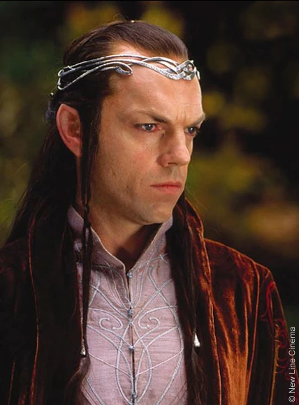
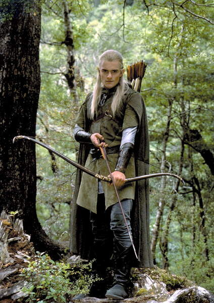

Bilbo Baggins:

Bilbo Baggins was a Hobbit of the Shire, the main protagonist of The Hobbit and a secondary character in The Lord of the Rings. He in 1.24 m tall. Bilbo Baggins was born on September 22 by Shire Reckoning (around September 12-14 of our calendar), in the year 2890 of the Third Age. He was the only son of Bungo Baggins and Belladonna Took.
In Hobbiton, Bungo Baggins constructed a spacious and luxurious Hobbit-hole for Belladonna, which they named Bag End. The family moved to their new home, where Bilbo would spend much of his life. As a young Hobbit, Bilbo was curious and eager for news of the outside world. The Istar wizard, Gandalf, took interest in this unusual quality in Bilbo during his visits to the Shire. Bilbo would later remember Gandalf's fireworks in the dwelling of his mother's family at Great Smials. Bilbo apparently practiced his rock-throwing skills in his youth so much, that birds and squirrels fled the area whenever he bent down to pick up a rock.
In the year TA 2941, Bilbo, at the age of 50, was visited by Gandalf, whom he had not seen for quite some time, outside his home at Bag End. Gandalf invited Bilbo on an unspecified adventure, which was flatly refused by the hobbit, who bade the wizard a "Good morning", and went inside. Undeterred, Gandalf continued in his plan, sending thirteen Dwarves, led by Thorin Oakenshield, to Bag End the very day. These Dwarves, needing an additional member for their company, initially came by pairs, and lastly with Gandalf, who had himself selected Bilbo as the best person for the Dwarves' job. The Dwarves explained to Bilbo their background and purpose; that they were among the Dwarves of Erebor who had been forced from the Lonely Mountain when the dragon Smaug attacked and taken up residence there. They now had determined to reclaim the mountain and needed a "burglar" to help them in situations requiring stealth. Bilbo reluctantly agreed to go, and the next morning they set off from the Green Dragon Inn.
Then they had many adventures until they reached Rivendell, the secret elf's valley where they discovered a secret message insidetheir map. Elrond found Moon-letters that spoke of the Side-door of Erebor, which read: Stand by the grey stone when the thrush knocks and the setting sun with the last light of Durin's Day will shine upon the keyhole. During their visit, Bilbo met Lord Elrond, and became enchanted with the Elves.
Bilbo and his companions then traveled from Rivendell and made their way to the High Pass of the Misty Mountains, where they witnessed the distant thunder-battle of giants. It was here the company, after taking shelter in what they took to be a simple cave, were captured by Goblins and taken to Goblin-town. With Gandalf's help, they escaped from the Great Goblin and his servants. Dori, however, who was carrying Bilbo, was grabbed from behind by a goblin, and in the ensuing struggle Bilbo lost consciousness and was inadvertently left by his companions.
Coming to and finding himself alone, Bilbo crawled his way through the pitch-black tunnel, using his hobbit nose to gain a sense of direction. He eventually stumbled upon a small Ring, but thought nothing of it, and put it in his back pocket. Although he did not know it, this lost trinket was the One Ring, forged by the Dark Lord Sauron thousands of years ago. Bilbo soon encountered Gollum, who had been in possession of the Ring for over five hundred years. The two challenged each other to a riddle-game with the condition that Gollum would show the way out if Bilbo won.
Bilbo won but Gollum tried to kill him with the help of the Ring. Realizing it was gone, he suspected that Bilbo had stolen It from him and chased him through the tunels without realizing he was behind him with the Ring on. This way, he lead him outside. Bilbo was soon reunited with his companions. Bilbo and the travelers had stopped for the night when orcs and a pack of Wargs found them near a patch of pine trees. The Dwarves, Bilbo, and Gandalf climbed up the trees to escape, but the orcs were not going to leave without killing them. They started to burn the trees down. The chief wolf was ordering the other wargs around when Gandalf picked up a pinecone, and with his magic set it ablaze in a green fire. He threw it down hitting the chieftain. It rolled around on the ground burning while Gandalf threw more and more pinecones down. The goblins and wargs fled and the group was rescued by the Great Eagles.
The group traveled to Beorn's house where they rested, after being gruffly taken in by Beorn and his animal servants. Beorn learned their story and gave a large number of provisions to help their quest. Beorn also lent several ponies to be used until the group reached Mirkwood. However, Beorn did not fully trust the Dwarves, so Bilbo saw Beorn giving careful watch to see that his ponies were unharmed. When the company arrived at the Forest Gate the ponies were let go (to several of the Dwarves discontent) and Gandalf left the group as well, warning them, "Do not stray off the path."
Inside the forest they tried to follow the path, but when the provisions ran out they went towards a fire and fell asleep. Then Bilbo discovered his companions were captured by great spiders. Bilbo was forced to find his lost companions and cut through the cocoons the spiders had formed around his companions. He distracted the spiders by improvising several insulting songs to irritate them, and succeeded when the creatures left their domain to find the intruder and eat him. Bilbo killed a few by throwing stones at them and by stabbing them with Sting. The spiders never found him, since during this time Bilbo made use of the Ring to remain invisible. After freeing the Dwarves, he led them into a charge against the spiders, where the company killed dozens of the arachnids.
They were then taken prisioners of the Elves, but Bilbo avoided it by using the Ring. Eventually Bilbo was able to rescue the Dwarves by stealing the chief of the guard's keys, and found a way for the company to escape the Woodland Realm by stowing away in a number of empty barrels, which periodically were taken by the Elves down the Forest River to Lake-town for trading purposes. The plan worked, and soon they all arrived at Lake-town, which they found to be a small town occupied by Men that Smaug would sometimes attack, though he had not been seen in many years.

Before long Thorin's company departed Lake-town, and crossing the river, followed Thrór's Map to the location of the Side-door before the end of Durin's Day. Upon discovering the keyhole, the door was opened and Bilbo was sent in alone in order to scout ahead and perhaps to steal some treasure from Smaug. When he arrived in the treasure chamber, however, Smaug was awake and sensed his presence, and so Bilbo put on the ring to avoid being seen.
Smaug, though unable to see the hobbit, tried to figure out who or what the intruder was, but Bilbo refused to tell the dragon his true identity, answering Smaug's questions only in riddles. While invisible, Bilbo noticed that Smaug had a bare spot on his jewel-encrusted underbelly. Finally, Bilbo removed the ring and Smaug saw that he had stolen a cup, causing him to go into a terrible rage. After Bilbo made it out of Smaug's lair safely, he convinced Thorin and the other Dwarves to enter the side-door and close it behind them, which saved their lives when Smaug left the mountain, and flying to the side-door, scorched the surrounding area. Foiled, the dragon flew off to Lake-town with the intent to destroy it once and for all.
Bilbo afterwards relayed to the Dwarves what he had learned, but a thrush, hearing the information, flew to Lake-town and told Bard, a descendant of the Men of Dale, of Smaug's weakness. On Smaug's arrival, Bard shot the Black Arrow at the bare spot, killing Smaug and sending him to rot at the bottom of the lake, but destroying most of Lake-town.
In the meantime, Thorin and company had reclaimed the Lonely Mountain, though Bilbo, having found the Arkenstone that Thorin greatly desired, kept it secret from the Dwarf. They were informed by Roäc, an old raven of the mountain, of Smaug's death in Lake-town, but quickly the Dwarves' mirth was dampened by the news that the surviving Men of Lake-town and the Elven-king's army were marching to the mountain to reclaim their wealth. Thorin, suspicious of the armies, refused to make any deal, with them at their arrival, and barricaded the mountain, thus beginning a siege.
Bilbo, hoping to avoid conflict, took the Arkenstone to Bard and Thranduil, in order for them to barter their share of the treasure with. Despite Bard and the Elvenking's offers for the hobbit to stay with them for the time being, Bilbo decided to return to the mountain. Thorin, on soon afterwards discovering Bilbo's perceived treachery, was furious and banished the hobbit from the mountain.
Bilbo stayed with Gandalf and Bard for a short time, until Dwarves from the Iron Hills, led by Dáin Ironfoot, arrived to aid Thorin's cause. However, shortly following this, a great army of goblins, led by Bolg, attacked, forcing the Dwarves, Elves, and Men to fight together to both defend the mountain and survive. This became known as the Battle of Five Armies, and though the goblins were defeated, Thorin and his nephews Fíli and Kíli were mortally wounded. Beorn, chieftain of the Beornings, who had joined the fight, slew Bolg along with his bodyguard and carried Thorin to safety. Bilbo only witnessed part of the battle, as he was rendered unconscious early on, and wearing the ring, lay undiscovered until he came to following the battle's conclusion. Thorin praised Bilbo and apologized to him for cursing him earlier, and thereafter passed away.
After Thorin's funeral, the new king Dáin II offered him his one-fourteenth share of the treasure, but Bilbo declined, receiving only two small chests, one with gold, and the other laden with silver. He then traveled back with Gandalf to the Shire. They dug up some of the buried treasure the Dwarves had buried earlier, most of which Bilbo offered to Gandalf to use to aid the peoples of Middle-earth. When they at last came to the borders of the Shire, the two parted, with Gandalf going his own way.

Although Bilbo returned safely to Bag End with his reward and lived in relative comfort, Bilbo’s life was not quite the same as it had once been. His sudden return after having been thought dead lost him some of the neighbors’ respect and he was later thought of as an oddity, and there were many talks and false rumors circulated about his affairs and doings.
Bilbo was very generous with his money and most people were willing to forgive him for his oddities. He had many friends especially amongst the Gamgees whom he consulted frequently on landscaping and on the growing of vegetables. His good friend the Gaffer even allowed him to tutor his son Samwise Gamgee. Bilbo taught him to read and write, and at some point taught him various bits of poetry and told him tales of the elder days. Yet, he slowly began to become weary of his settled and sheltered life at Bag End.
Bilbo was the bearer of the One Ring for six decades, ignorant of its significance. However, by TA 3001, the Ring had begun to affect him. He did not appear to have aged at all, although he felt older and thin inside. He decided that he wanted to partake in one more adventure before he found a place to settle down and finish his account of the Quest for the Lonely Mountain.
On September 22, a farewell Birthday Party was held in his honor, where he announced his intention to leave the Shire, to the shock of his family and friends. Immediately afterward, he put on his Ring and disappeared, as a joke on his neighbors. He returned to his house where he was confronted by his friend Gandalf, who tried to persuade him to leave the Ring for Frodo. After a discusion he finally left It behind becoming the first Ring-bearer to give up the ring of his own will.
Between TA 3003 and TA 3018, Bilbo worked on the written account of his adventures, in a book that would later be known as the Red Book of Westmarch. On September 22, 3021, Bilbo turned 131 and became the oldest hobbit ever to have lived. Since Bilbo had been a ring-bearer, he was allowed to accompany Frodo to the Undying Lands. On September 29, he, Gandalf, Elrond, Galadriel, and Frodo boarded a ship docked at the Grey Havens and sailed away from Middle-earth. His fate afterward is not known but as he too was a mortal being, he most likely died in the light of the Blessed Realm of Valinor.
Frodo Baggins:

Frodo Baggins, son of Drogo Baggins, was a hobbit of the Shire in the late Third Age. He is 1.24 m tall. Much of Frodo's youth was spent at Brandy Hall in Buckland, the ancestral home of the Brandybuck family, including his mother (Primula Brandybuck). Frodo was known as something of a rascal, befriending Meriadoc (Merry) Brandybuck and Peregrin (Pippin) Took and causing trouble wherever they went. They would often steal mushrooms from Farmer Maggot's farm Bamfurlong.
In TA 2980, when Frodo was only 12 years old, his parents drowned in a boating accident on the Brandywine River. An only child, Frodo stayed in Brandy Hall until his 99-year-old "uncle" Bilbo, his father's second cousin, adopted him in TA 2989. Bilbo took Frodo to live with him in his home at Bag End and made him his heir. The two grew very close in the following years; Frodo, treated by his adopted guardian as he were his own son, learned much of the Elvish language during his time with Bilbo, as well as much of the lore of Middle-earth. They also had a weekly tradition of taking long walking trips together from Hobbiton to Michel Delving and Buckland; all throughout the Shire. The two shared the same birthday.
Before departing for his journey to Rivendell, Bilbo was persuaded by Gandalf to voluntarily surrender the One Ring. Bilbo left it on the fireplace mantel with a note for Frodo, who would now become the next Ring-bearer.
Gandalf advised the young hobbit against the using the Ring. For the next seventeen years, Frodo complied with the wizard's request and hid the Ring in a safe place. However, on April 12, 3018, Gandalf returned to Bag End and warned Frodo that the Ring was actually the One Ring, which the Dark Lord Sauron needed to rule over Middle-earth. Realizing that Sauron would be looking for the Ring, Gandalf advised the Hobbit to secretly follow Bilbo's journey to Rivendell.
Merry helped Frodo to purchase a small house at Crickhollow. With the exception of his gardener Sam Gamgee, who had agreed to accompany him to Rivendell, Frodo told the other Hobbits of the Shire that he intended to move to Buckland.Frodo left from Bag End, taking with him Sam and Pippin. They left in the early morning for Bree, and just in time, as Sauron's most powerful servants, the nine Nazgûl, had entered the Shire dressed as Black Riders searching for a hobbit with the name of Baggins.
After many adventures together including their encounter with Tom Bombadil, the arrived to Bree. In Bree, the hobbits stayed at The Prancing Pony, an old inn. Frodo went by the name of Mr Underhill, attempting to raise as little suspicion as possible. When he noticed a mysteriously cloaked Man sitting in the shadows and smoking a long-stemmed pipe, Frodo asked the innkeeper, Barliman Butterbur, who the man was. The innkeeper referred to the man, a Ranger, as Strider. That night, Black Riders arrived in Bree and attacked the inn in search of Frodo and the One Ring, but Strider had managed to hide the Hobbits from them in time. Having gained their trust, Strider introduced himself as Aragorn to Frodo and the others, to whom he also revealed the backstory of the black riders, also called Nazgûl or Ringwraiths. With a pony named Bill that the Hobbits had acquired at Bree, Strider led Frodo and his companions into the Wild. Aragorn would be their guide to Rivendell, and he would lead them through the Midgewater Marshes and to the hill of Weathertop.
On the night of October the sixth, the Hobbits were attacked by five of the nine Ringwraiths at Weathertop. In the presence of the Nazgûl, Frodo made the mistake of putting on the Ring. He was able to resist their attempt to take him by drawing his sword and invoking the name of one of the Valar, Elbereth Gilthoniel. Unfortunately, the leader of the Nazgûl, the Witch-king of Angmar, stabbed Frodo in the shoulder (he would have stabbed his heart) with a Morgul-knife. If it had caught him in the heart, Frodo would have become like the Nazgûl, only weaker and under their control. The Ringwraiths were driven away by the appearance of Aragorn and his martial skill; also because he had torches, one of their few weaknesses.
A fragment of the Ringwraith's blade remained in Frodo's flesh, where it continued to move towards his heart. Near death (or worse), Frodo was rescued by Glorfindel, an Elf-lord, who put the injured Hobbit upon his horse Asfaloth. They were found and pursued by the Nazgûl, as Glorfindel rode and bore Frodo swiftly to the Ford of Bruinen, at the entrance to the valley of Rivendell. Once they had crossed the River Bruinen, the Nine Ringwraiths behind them demanded Frodo give up the Ring, but Frodo refused. Subsequently, the Ringwraiths entered the river and were washed away in a flood called up by Elrond.
Frodo was soon healed in Rivendell by Elrond, who knew the wound would not ultimately leave him, as it was both spiritual and physical. On the 24th of October 3018, Frodo awoke in Rivendell and was reunited with Bilbo, Gandalf, Aragorn, Sam, Merry, and Pippin. Although Elrond had healed his wound, it continued to ail him yearly for as long as he lived in Middle-earth.

After his healing, Frodo was summoned to a great Council that Elrond had organized. Representatives of all the Free Peoples of Middle-earth discussed the history of the Rings of Power and decided that the One Ring must be destroyed. As the Ring was shown and tempers flared, argument broke out as to who should carry the Ring on this mission, until Frodo bravely volunteered to take the Ring to Mordor and cast it into the fires of Mount Doom. A member of each of the Free Peoples offered to join Frodo in his quest, thus forming the Fellowship of the Ring. The Fellowship consisted of Frodo, Samwise, Merry, Pippin, Aragorn, Gandalf, Boromir of Gondor, Legolas of the Woodland Realm, and Gimli of the Lonely Mountain.
Before leaving Rivendell, Bilbo gave Frodo his dwarf-made coat of mithril mail and his elven blade Sting. The mithril coat had been given to Bilbo by Thorin Oakenshield during the events of The Hobbit, and Sting had been taken by Bilbo from a troll den. On December 25, the Fellowship of the Ring departed from Rivendell and headed south.
After an attack by White Wolves in Eregion, on January 11, 3019, the Fellowship attempted to cross the Misty Mountains (specifically the Pass of Caradhras), but were unable to due to a snowstorm. They instead traveled through the underground city of Moria at the urging of Gimli. After solving the riddle to enter, they continued their path, but were attacked by orcs, goblins and a cave troll. Frodo was stabed but the mithril coat saved him. They then run to the bridge of Khazad-dum, in which Gandalf fell fighting the Balrog.
Deeply grieved by their loss, the Fellowship journeyed to the Elven kingdom of Lothlórien, where they met the Lady Galadriel and Lord Celeborn. Galadriel showed Frodo a vision of the future in her Mirror. Frodo offered her the One Ring, but she resisted the temptation to take it, passing the test that was laid before her, and accepting the diminishing of the power of the Elves. Before the Fellowship departed from Lothlórien, Galadriel gave each member a gift. To Frodo, she gave a phial with the light of the star Eärendil captured inside; this gift would prove hugely important later on in the quest. They were also provided with elven way-bread, other supplies, and boats for their voyage down the Anduin River.

The Fellowship continued their journey south to Parth Galen. There, Boromir, a Man of Gondor and a member of the Fellowship, attempted to convince Frodo to bring the Ring to Minas Tirith and regroup from there. When the hobbit asked for an hour alone to consider his options, Boromir followed him. Seeing that Frodo did not intend to take the suggested course of action, Boromir tried to take the Ring from him by force. Frodo scaped putting on the Ring.
Taking off the Ring, he decided to take the item to Mordor alone, without telling the other members of the Fellowship. However, he was joined by his friend Samwise Gamgee, who felt it was necessary that he should protect and guide Frodo. Frodo gave in to Sam's protests, and although reluctant to lead anyone else to his fate, was glad to have Sam's company.
The two hobbits continued toward Mordor, dividing the Fellowship. After leaving what remained of the Fellowship at Amon Hen, Frodo and Sam tried to navigate through the winding paths and razor sharp rocks of the Emyn Muil. After getting lost several times, they were found by Gollum, who at first tried to take the One Ring, but was captured by Sam (with Frodo's help) and tied up with the Elven rope. Frodo, now pitying the creature, decided not to slay Gollum, but forced him to swear an oath of servitude to the master of the precious. Gollum then led them out of the maze and into the Dead Marshes.
Gollum led Frodo and Sam on a safe pathway through the marshes, warning them not to follow what seemed like small torches in the water. Gollum led the two Hobbits to the Black Gate of Mordor, as Frodo had desired, but stopped the Hobbits from passing its doors, as the danger was too great. He then explained about a secret way into Mordor, 'Up the stairs and through the tunnel'. The Hobbits once again found themselves being led by Gollum.
After venturing into Ithilien, and witnessing a skirmish between a company of Haradrim warriors (along with Oliphaunts) and Rangers from Gondor, they were apprehended by the Ranger's captain, Faramir. When the skirmish had ended, Faramir blindfolded the ring-bearer and his companions and led them to Henneth Annûn, the Window on the West. Upon much interrogation, Sam foolishly misspoke, and gave away that Frodo was indeed carrying the One Ring. Realizing the importance of the quest, Faramir proved his quality, unlike his brother, Boromir, and let the Ring-bearer go free, resupplying the hobbits with food for their journey. Later, Gollum was captured in the Forbidden Pool and forcibly taken into the hidden lair. Frodo begged for his safety, and he was not killed, although the rift between master and servant had once again begun to open.

Gollum led the hobbits past the lair of the Witch-king of Angmar, Minas Morgul, and up the Stairs of Cirith Ungol into 'The Tunnel'. When they arrived at the top though, they were abandoned by Gollum. They cautiously traveled through the tunnel, and managed to get to the end only to find their way barred by Shelob's great web. Whilst attempting to cut through the webbing, Frodo bravely stood up to Shelob and forced her back further into the tunnels giving him and Sam time enough to hack through the threads and escape. Upon escaping the tunnels, Frodo thought himself safe; however, Shelob, through one of her many tunnels, managed to sneak out and jab him with her stinger.
As he was being encased in Shelob's webbing, Sam was able to draw her into single combat wherein he, using Sting and the Phial of Galadriel, was able to mortally wound her and drive her back into her caves. Sam took the Ring from around Frodo's neck upon hearing Orcish voices, and hid behind some nearby rocks. He overheard the Orcs speaking of Frodo, and Sam realized that his master was not dead, but merely paralyzed. Frodo was then taken to the Tower of Cirith Ungol to await further torture and questioning.
Frodo was taken to the utmost top of the tower and imprisoned. He was stripped of all his clothes and all the things he carried. Squabbling over his mithril vest, fighting broke out amongst the two lead Orcs and their battalions, killing almost all the Orcs and Uruks in the tower. Sam rescued Frodo and they entered Mordor.
Frodo and Sam crawled onward through the empty plains of Mordor, as the Orcs had been sent to the Black Gate to stop the Men of the West's army, and, after falling in and out of a company of Orcs, started to climb Mount Doom. They journeyed on for many days with hardly any food or water, and Frodo became progressively weaker as the Ring's power over him grew the closer they came to Orodruin. Frodo was eventually unable to go on, and Sam was forced to carry him a fair distance while his master rested upon his back. It was then that Gollum reappeared, and after a brief struggle, Sam cut Gollum in the stomach, and Frodo fled up the mountain.
Inside the Cracks of Doom, Frodo finally had the chance to destroy the Ring, and rid himself of his burden, but the power of the Ring was at its strongest due to it being in the place of it's making. It was here that Frodo finally yielded to the temptation and power of the Ring. Sam yelled for Frodo to destroy the Ring, but Frodo was overcome by its power and claimed the Ring for himself. Gollum attacked Sam, who fell and hit his head on a rock, temporarily knocking him unconscious. When he came to he saw Gollum fighting with an unseen foe (Frodo, having put on the Ring). Then Gollum bit off Frodo's finger, Ring and all, and was reunited with his treasure for a short time, until dancing with joy he toppled off the brink and fell into the depths, destroying himself and the One Ring.
The two hobbits tried to escape as the volcano erupted. Just as it looked as though they were doomed, Gwaihir the Lord of Eagles saw them, and with his Eagle companions Landroval and Meneldor rescued Sam and Frodo and flew them to safety.
After recovering at the Field of Cormallen and witnessing the crowning of Aragorn as King Elessar, Frodo, Sam, Merry, and Pippin all returned to the Shire. In the films they lived happily, but in the books they discovered it under the control of an individual named Sharkey (later revealed to be Saruman) and his forces. They had to overtrow him.

Following the Scouring of the Shire and end of the War of the Ring in November, Frodo went on to serve as Deputy Mayor of the Shire. During his brief tenure of six months, he helped lead the rebuilding of the Shire, but soon realized that he still bore the wounds of his quest. On May 1st, TA 3020, Frodo attended the wedding of his best friend Sam and his wife Rosie Cotton and they moved in with him at Bag End. On mid-years day later that year, Frodo retired from his post as Deputy Mayor, letting the office revert to Will Whitfoot, who Frodo held place for as he recovered from his wounds and imprisonment by Saruman.
Frodo also wrote his own story "The Lord of the Rings" along with Bilbo's "There and Back Again" in the Red Book of Westmarch. On 29 September TA 3021 (Third Age), at the age of 53, Frodo joined Bilbo, Gandalf, Elrond and Galadriel aboard an Elven ship. He was allowed passage across the sea to the Undying Lands, as he was a Ring-bearer, with the hope of healing the damage to his spirit that bearing the Ring had caused.
Samwise Gamgee:

Samwise Gamgee, known as Sam, was a hobbit of the Shire. He is 1.27 m tall. He was Frodo Baggins' gardener and best friend. Sam proved himself to be Frodo's closest and most dependable companion, the most loyal of the Fellowship of the Ring, and played a critical role in protecting Frodo and destroying the One Ring.
Sam was the youngest son of Hamfast and Bell Gamgee, and had many brothers and sisters. A gardener by trade, Sam seemed to be a simple Hobbit of plain speech. However, his love for Elves, his gift for poetry, and his belief that the world contained greater wonders than most hobbits were aware of (all nurtured by his tutor Bilbo Baggins) set him apart from the beginning.
As "punishment" for eavesdropping on Gandalf's conversation with Frodo regarding the dangers of the One Ring while trimming the grass of Bag End, Gandalf chose Sam to be Frodo's companion on his journey to Rivendell.
After leaving Bree, Sam became very close to the pony Bill. On arrival at the Doors of Durin Bill had to be set loose as he could not pass through the Mines of Moria. This caused Sam great distress. In Lothlórien Sam was given a gift by the Lady Galadriel; a small box containing soil from her garden along with a Mallorn seed.
At Amon Hen, Sam followed Frodo ofering to go with him all the way to Mount Doom, almost drowning in the process. Frodo finally accepted his help and ever since, Sam never left his side until they completed their quest.

Sam bravely fought Shelob using both the light of Earendil and Sting, Frodo's sword. He managed to severely wound Shelob in the abdomen, making her retreat to cure her wounds.
After Shelob attacked and seemingly killed Frodo, Sam took the Ring, intending to complete the quest on his own. Because he held the Ring for a time, he was considered one of the Ring-bearers and during the time he possessed it the Ring tempted him with visions of a great garden all for himself. Being humble, Sam never gave into the treacherous visions and temptations of the Ring, and returned it when he discovered Frodo alive in the Tower of Cirith Ungol. He and Bilbo were the only ones ever to have given up the Ring willingly, and only Sam surrendered it readily.
When Orcs took Frodo's body, Sam overheard one of them saying that Frodo was still alive, so he followed them into the Tower of Cirith Ungol, determined to rescue Frodo. Once there he found that competing bands of Uruks and Morgul Orcs had rioted and killed one another over the possession of Frodo's Mithril coat, thus making it easier for Sam to get to Frodo and escape the tower with him.
To rescue Frodo fron Cirith Ungol he had to fight many orcs on his way up. As he was using the Ring, the orcs saw him as a mighty warrior holding a powerful artifact and as a result were terrified of him.
Sam and Frodo made their way to Mount Doom, disguised as Orcs along the way. The way to Mount Doom was filled with fiery rocks and pillows of ash which made it almost impossible for the hobbits to pass. When Frodo collapsed from weakness, Sam carried him up the slopes of Mount Doom, only to be stopped by Gollum.
Sam delayed Gollum while Frodo continued towards the Cracks of Doom. Sam then rushed to follow Frodo, only to see Frodo renounce the quest and claim the Ring as his own, putting it on his finger. Unbeknownst to Sam, Gollum had followed in his tracks, and attacked him from behind. In the moments while Sam was dazed, Gollum attacked Frodo, and after a brief struggle took the Ring by force by biting off Frodo's finger. Gollum began to celebrate regaining the Ring, but in doing so slipped and fell to his death in the fiery chasm below, destroying the Ring in the process.
The destruction of the Ring triggered a violent upheaval of Mount Doom, but with Sam's assistance, the two hobbits escaped from Sammath Naur onto the mountainside. Though they attempted to descend, the hobbits were trapped by the issue of lava and fiery ash from the mountain. Before the fire reached them, however, Gwaihir the Lord of the Great Eagles, come at the behest of Gandalf, spotted the hobbits from afar. Landroval and Meneldor, Gwaihir's companions, rescued Sam and Frodo and flew them to the safety of Ithilien.
Some months afterwards, Sam, along with a great company including Aragorn, Gandalf, Galadriel, and the other hobbits, left Minas Tirith, traveling towards the Shire by way of Rohan, Isengard, and Rivendell. All but Gandalf left them by the time the company reached Rivendell, and from there the four hobbits returned to the Shire.

Following the Scouring of the Shire, Sam married Rose (Rosie) Cotton. They had thirteen children: Elanor the Fair, Frodo, Rose, Merry, Pippin, Goldilocks, Hamfast, Daisy, Primrose, Bilbo, Ruby, Robin, and Tolman. When Frodo Baggins announced that he was leaving to the Undying Lands, west of Middle-earth, he gave Sam the Red Book of Westmarch and Bag End where he and his large personal family, later called the Gardners, would live for many years.
After Will Whitfoot resigned his post as Mayor of Michel Delving, in SR 1427, Sam was elected Mayor of the Shire for seven consecutive seven-year terms.
After his wife died in the year 61 of the Fourth Age (SR 1482), Sam entrusted the Red Book to his daughter, Elanor, and left the Shire. It was a tradition handed down from Elanor that he went to the Grey Havens, and because he was also a Ring-bearer (albeit for a short time), he was allowed to pass over the Sea to be reunited with Frodo in the Undying Lands where they both lived together until they died.
Meriadoc Brandybuck:
Meriadoc "Merry" Brandybuck was a Hobbit of the Shire and one of Frodo Baggins cousins and closest friends. He is 1.38 m tall. He loved boats and ponies and had a great interest in the maps of Middle-earth. He was also one of the nine companions of the Fellowship of the Ring, and later became the eighth Master of Buckland.
Merry was born in TA 2982. He was the only child of Saradoc Brandybuck (TA 2940 - FO 11) the Master of Buckland, and Esmeralda Took (TA 2936 - ?), the younger sister of Paladin II Took. This made him first cousin to Paladin's son Pippin, who was also his closest friend.
Merry was often considered the most perceptive and intelligent of the hobbits, for example, knowing of the One Ring and its power even before Frodo Baggins left the Shire. He guarded Bag End after Bilbo's party, protecting Frodo from the various and often unwanted guests. He also was the force behind "the Conspiracy" of Sam, Pippin, Fredegar Bolger and himself to help Frodo. Thus, even before the Quest of the Ring began, Merry was well prepared and organized; he assembled their gear and brought ponies.
As a Brandybuck he also had a key to the gate in the High Hay. This shortcut through the Old Forest served them well, because they avoided the Black Riders and met Tom Bombadil, who helped them. At the Barrow-downs, Merry acquired his sword, a work of Westernesse, forged for the old war between Arnor and Angmar, which would prove crucial in latter events.
At Bree, he was not present in the Prancing Pony when Frodo foolishly put on the Ring; but was outside taking a walk, and was nearly killed by the Nazgûl who arrived. At Rivendell, he was seen studying maps and plotting their path. His approval to the Fellowship came with only a little less reluctance than Pippin's; they were the two selected to relay news to the people of the Shire about Frodo's journey, but in the end Gandalf, believing in the friendship and loyalty shown to Frodo and Sam, requested that Elrond allow the two hobbits to come along.
At Amon Hen he was captured along with Pippin by a band of Saruman's fighting Uruk-hai, but he made a good account for himself, and Boromir valiantly defended him, though Boromir died in the attempt.
After being captured by the Uruks, Uglúk crudely tried to bandage Merry's head wound. Despite this, a scar would remain on Merry's head forever. The Uruks then gave to them an Orc drink, which would keep the Hobbit alive during the fast march towards Isengard.
When they neared Fangorn Forest, Grishnákh began searching them, attempting to find the One Ring, which he believed they carried. Before he was able to escape with the hobbits, Éomer's éored attacked and all of the Orcs, including Grishnákh, were slain. During the confusion of the battle Merry and Pippin were able to escape into Fangorn Forest.
Escaping with Pippin into Fangorn Forest, Treebeard and the newly risen Gandalf the White met him. Along with Pippin, he drank significant amounts of Ent-draught, which contributed to speedy gains in height and hair growth. Accompanying Treebeard to the Entmoot, and later to Isengard, he and Pippin were set as guardians following Saruman's fall. It was here that Merry encountered King Théoden of Rohan, and was reunited with the remaining members of the Fellowship (save Frodo and Sam).
Separated from Pippin when Gandalf took the latter to Gondor, Merry swore fealty to Théoden and became his squire. Without permission from his liege, he rode to the Battle of the Pelennor Fields in the care of young Dernhelm (who, unbeknownst to Merry, was actually Théoden's niece Éowyn).
When the Nazgûl attacked the Riders of Rohan and Théoden was injured, Merry and Éowyn faced the Witch-king of Angmar alone. Here, Merry's companion revealed herself to be Éowyn. Battling both Fellbeast and the Nazgûl alone, Éowyn was well assisted by Merry's crucial move: his sword, was one of the few weapons able to pierce the Ringwraith's form, but at a great expense to himself. He stabbed the Witch-king behind the knee as he was about to kill Éowyn. This was enough to allow Éowyn to finish off the Witch-king.
Merry heard Théoden's last words, but went unnoticed by the honor escort of Riders and was found wandering the city by Pippin. He was saved by the healing of Aragorn and recovered fully, leaving Minas Tirith to tend to the wounded Pippin at the Field of Cormallen.
For his bravery in battle, King Éomer, as the new King of Rohan, knighted him and gave him the name of "Holdwine". During the Scouring of the Shire, he was in the forefront of the Battle of Bywater, using the Horn of Rohan presented to him by Éowyn.
Upon their return he and Pippin both married. They were also the tallest of hobbits - Meriadoc being the slightly taller of the two - taller even than the legendary Bandobras "Bullroarer" Took, due to their having drunk large amounts of Ent-draught. Merry married Estella Bolger some time after the end of the Third Age. He became the Master of Buckland in SR 1432 (FA 11), living at Brandy Hall and also Crickhollow.
He wrote Old Words and Names in the Shire. Although he was not recorded as having any children within the family trees, he had at least one son. At the age of 102, Merry returned to Rohan and Gondor with Pippin, dying there some time after the year FO 63. He was laid to rest in Gondor, and when Elessar died in FO 120, he and Pippin were entombed beside the great king.
Peregrin Took:

Peregrin Took, more commonly known as Pippin, was a hobbit of the the Shire, and one of Frodo Baggins' youngest and closest friends. He is 1.38 m tall. He was a member of the Fellowship of the Ring and, after the War of the Ring, became thirty-second Thain of the Shire.
Pippin was born to Paladin II Took and Eglantine Banks on the spring of TA 2990 (SR 1390). He was the youngest of four children and had three older sisters, Pearl, Pimpernel, and Pervinca. His father's sister, Esmeralda Took, was the mother of Meriadoc Brandybuck, thus making Pippin and Merry first cousins.
While on their way to Buckland, Frodo Baggins, Samwise Gamgee, and Peregrin Took encountered a Black Rider, who was warded off by the presence of a company of Elves, led by Gildor Inglorion. On the way to Bree, Pippin was caught up with the Barrow-wights on the Barrow-downs. After the encounter, Pippin acquired a Dagger of Westernesse. In The Prancing Pony, Frodo accidentally slipped the One Ring upon his finger, drawing the attention of the Black Riders.
Their group met a Ranger of the North, Strider. The inn was attacked by the Nazgûl at night, and the four hobbits were successfully led away by Strider, whose real name was Aragorn. Aragorn led them to Weathertop, where the group was once again attacked by the Black Riders. In haste to get an injured Frodo to Rivendell, the Elf-lord Glorfindel arrived and guided them. After the Council of Elrond, Pippin and Merry were allowed by Elrond to join the Fellowship of the Ring.
In Moria, Pippin thoughtlessly dropped a stone down a well, which roused goblins in various caverns and revealed the Fellowship's presence to them. It incurred Gandalf's wrath, and he called Pippin a "fool of a Took". The battle of the Chamber of Mazarbul followed.
In the Skirmish at Amon Hen, Pippin and Merry were protected by Boromir, who was killed in the process. The two hobbits were taken away by the Uruk-hai, mistaking them to be the Ring-bearer. On their way to Isengard, Pippin dropped the Elven-brooch he received from Lothlórien, as a sign for Aragorn, Legolas, and Gimli, who were in pursuit. When a company of the Rohirrim ambushed the Uruk-hai, Pippin and Merry were able to escape into Fangorn Forest, where they meet the Ent Treebeard.
They both drank Ent-draughts during their time in Fangorn, which increased their heights substantially. Pippin and Merry eventually befriended Treebeard and told him what had happened to them. After the Entmoot, the Ents decided to march against Isengard. Pippin and Merry were reunited with Aragorn, Legolas, Gimli, and Gandalf after Isengard's destruction.
In Orthanc, Pippin picked up Saruman's palantír, which Gríma Wormtongue threw. As he looked into the stone, Pippin had a first-hand encounter with Sauron himself, leading the Dark Lord to assume Pippin was the Ring-bearer. Gandalf and Pippin then rode on Shadowfax to Gondor, for the latter's protection from Sauron's forces. Pippin met Denethor II, the Ruling Steward of Gondor and Boromir's father. In recompense for Boromir's death, Pippin pledged his allegiance to Denethor and became a Guard of the Citadel.
While in Minas Tirith, Pippin befriended Beregond, a fellow Guard of the Citadel, his son Bergil and Faramir, Boromir's younger brother. During the Siege of Gondor, Pippin witnessed Denethor preparing a pyre in the Hallows for himself and an unconscious Faramir. Pippin quickly went out in search for Gandalf, with whom he was able to save Faramir from being burned to death. Denethor, however, burned to death in the pyre he had made.
Pippin was among the army of the West, which was led by Aragorn. They assaulted the Black Gate to divert the attention of Sauron and give Frodo enough time to destroy the Ring. In the Battle of the Black Gate, Pippin managed to kill one of the Olog-hai, a troll-race bred by Sauron, the first hobbit ever to do so. He was knocked unconscious when the troll fell on him. Gimli later recognized the Hobbit feet under the Troll and brought him to the healers, saving his life.
After his coronation, King Elessar knighted him and granted him and his fellow hobbits leave to return home, as well as leave to return to Gondor whenever they liked. Later, he, Merry, Frodo, and Sam were instrumental in overthrowing the small remainder of Saruman's forces during the Scouring of the Shire.
In the year FO 6 of the Fourth Age Pippin married Diamond of Long Cleeve, when she was 32 and he himself was 37. They had one son, Faramir Took, who later married Samwise Gamgee's daughter Goldilocks Gardner. In the year FO 13, Pippin became the 32nd Thain of the Shire, a position he held for 50 years before renouncing it in FO 63, when he revisited Rohan and Gondor with Merry.
He remained in Gondor for the rest of his life. Pippin died some time after the year FO 63 and was laid to rest with Merry in Gondor. After the great King Elessar (Aragorn) died in FO 120, Merry and Pippin were entombed next to him.
Aragorn II (Elessar):

Aragorn II, son of Arathorn II and Gilraen, also known as Elessar and Strider, was the 16th and last Chieftain of the Dúnedain of the North; later crowned King Elessar Telcontar (March 1, 2931 - FO 120), the 26th King of Arnor, 35th King of Gondor and first High King of Gondor and Arnor since the short reign of Isildur. He was 1.98 m tall. He was a great Ranger and warrior, and as Isildur's heir he bore the shards of Narsil, reforged and renamed Andúril, Flame of the West, in the Great War of the Ring.
Aragorn was a descendant of Elros Tar-Minyatur through the line of the Lords of Andúnië to Elendil, High King of Arnor and Gondor. Like all of the kings before him, he was related to Elrond through the House of Elros. His ancestor Arvedui was wedded to Fíriel, descended from Anárion, who bore their son Aranarth, making Aragorn the last descendant of both Isildur and Anárion.
When he was only two years old, his father Arathorn was killed while pursuing Orcs. Aragorn was afterwards fostered in Rivendell by Elrond. At the request of his mother, his lineage was kept secret, as she feared he would be killed like his father and grandfather if his true identity as the descendant of Elendil and Heir of Isildur became known. Aragorn was renamed "Estel" and was not told about his heritage until 2951.
Elrond revealed to "Estel" his true name and ancestry when he was twenty, and gave to him the Ring of Barahir and the Shards of Narsil. Elrond withheld the Sceptre of Annúminas from Aragorn until he "came of the right" to possess the item.
It was also around this time that Aragorn met and fell in love with Arwen, Elrond's daughter, newly returned from her mother's homeland of Lothlórien where she had been visiting her grandmother Galadriel.
Aragorn thereafter assumed his proper role as the sixteenth Chieftain of the Dúnedain and left the comforts of Rivendell for the wild, where he lived with the remainder of his people, the Rangers of the North, whose kingdom had been destroyed through division and the Angmar Wars centuries before.
Aragorn met Gandalf the Grey in 2956 and they became close friends. Heeding Gandalf's advice, Aragorn and the Rangers began to guard a small land known as the Shire inhabited by the diminutive and agrarian Hobbits, and he became known among the peoples just outside the Shire's borders as Strider.
From TA 2957 to TA 2980, Aragorn undertook great journeys, serving in the armies of King Thengel of Rohan, and Steward Ecthelion II of Gondor. Many of his tasks helped to raise morale in the West and counter the growing threat of Sauron and his allies, and he earned priceless experience which he would later put to use in the War of the Ring. Aragorn served these lords in disguise and his name in Gondor and Rohan during that time was Thorongil ("Eagle of the Star"). With a small squadron of ships from Gondor, he led an assault on the long-standing Corsair city of Umbar in 2980, burning many of the Corsairs' ships and personally slaying their lord during the battle. After the victory at Umbar, "Thorongil" left Gondor and, to the dismay of his men, went east.

Later in 2980, he visited Lothlórien, and there once again met Arwen. He gave her the heirloom of his House, the Ring of Barahir, and, on the hill of Cerin Amroth, Arwen pledged her hand to him in marriage, renouncing her Elvish lineage and accepting the Gift of Men; death.
Elrond withheld from Aragorn permission to marry his daughter until such a time as his foster son should be king of "both" Gondor and Arnor. As both Elrond and Aragorn knew, to marry a mortal, Arwen would be required to choose mortality, and thus deprive the deathless Elrond of his daughter while the world lasted. Elrond was also concerned for Arwen's own happiness, fearing that in the end she might find death (her own and that of her beloved) too difficult to bear.
Before the events of The Lord of the Rings properly take place, Aragorn traveled widely through Middle-earth, entering the Dwarven mines of Moria via the East-gate of Moria but exiting the same way. He also journeyed to Harad, where (in his own words) "the stars are strange".
In TA 3009, Gandalf grew suspicious of the origin of the Ring belonging to the Hobbit Bilbo Baggins, which later turned out to be the One Ring, the key to the Dark Lord Sauron's power. Setting a guard of Rangers on the Shire, Aragorn went at Gandalf's request into Rhovanion in search of Gollum, who had once possessed the Ring. He caught the creature in the Dead Marshes near Mordor, and brought him as a captive to Thranduil's Halls in Mirkwood, where Gandalf questioned him. Gollum, however, escaped some time later with the aid of Sauron's Orcs.
Aragorn returned with Gandalf in the spring of TA 3018, and then went away on his own journey, and was not able to help when Gandalf discovered the Nazgûl were seeking for Frodo and the Ring in the Shire. After Frodo left Hobbiton, Gildor Inglorion informed Aragorn that the Nine were looking for him and Gandalf was missing. Following them to Bree, he met Frodo at the Inn of the Prancing Pony under the name "Strider," as the Men of Bree called him. Though originally the hobbits were suspicious of him, Barliman Butterbur brought a letter from Gandalf that made them trust him. Aragorn was aged 87 at that time, nearing the prime of life for one of royal Númenórean descent.
When they themselves came to Weathertop, they discovered five of the Nazgûl had followed them, and during the later attack he fought off the Ringwraiths. After attempting to heal Frodo with athelas, he led them across the Lone-lands towards the Trollshaws. They met with the Elf-lord Glorfindel who led them to the Ford of Bruinen. When the Nazgûl caught up with them and Elrond released a flood, Aragorn and the Hobbits kindled fire and flushed out those Nazgûl that had remained on the western bank. He then accompanied Frodo to Rivendell.
During the feast of victory, Aragorn was gathering news from Elladan and Elrohir, and later helped his friend Bilbo compose his Lay of Eärendil. During the Council of Elrond, he revealed himself to Boromir as the heir of Isildur and described his capture of Gollum. After Elrond decided that the Ring must be destroyed in Mordor, Frodo took the burden upon himself. There, Aragorn chose to join Frodo, thus forming the Fellowship of the Ring, tasked with accompanying Frodo in destroying the Ring in the fires of Mount Doom.
Before the group set out, the shards of Narsil were re-forged, and the restored blade was named Andúril. Aragorn and Gandalf had been planning their journey to Mordor for weeks. He and Gandalf guided the Fellowship south along the line of the Misty Mountains. When they came to Hollin, Aragorn grew suspicious due to the lack of any sound he heard and spotted the Crebain who were spying out the land for Saruman. He then convinced Gandalf to try the pass over Caradhras. However, while they were still far down the mountain, they were caught in a freak storm brought on by Sauron, and were forced to retreat. Aragorn, together with Boromir, made a path through the snow for the Fellowship to escape.
After it was proposed to go through Moria, Aragorn reluctantly agreed to go and helped fight off the Wargs that attacked them during the night. Helping to rescue Frodo from the Watcher in the Water, once the company entered Moria, Aragorn remained at the back and noticed Gollum beginning to follow them. After they were attacked in the Chamber of Mazarbul, Aragorn fought off the attackers and killed the Orc-Chieftain, that had seemingly killed Frodo.
During Gandalf's battle with the Balrog on the Bridge of Khazad-dûm, Aragorn ran to his side and became the Fellowship's leader after Gandalf fell, presumed dead. Aragorn then led the company to Lothlórien, where he visited Cerin Amroth for the last time. At their parting, Lady Galadriel gave him the Elfstone.

After Lórien, Aragorn and the Fellowship sailed down the River Anduin to the Falls of Rauros. Aragorn attempted to catch Gollum several times. Though his original plan was to set out for Gondor and aid its people in the war, he felt responsible for Frodo after the loss of Gandalf and was conflicted about what path to take.
After passing the Argonath, the Fellowship camped at Parth Galen. Frodo saw that Boromir had been driven mad by the influence of the One Ring, trying to take it. Frodo put the Ring on, rendering him invisible, and ran away from Boromir. Frodo climbed to the high seat on Amon Hen; from there he could see Sauron's eye looking for him. The Hobbit felt the eye but the Dark Lord was distracted by Gandalf the White.
At this same time, the others were attacked by Saruman's Uruk-hai and a battle ensued. During the ensuing battle, Boromir was killed defending Merry and Pippin, expressing his remorse privately to Aragorn for trying to take the Ring. After discovering that Frodo had left, Aragorn and the others decided that they would leave Frodo and Sam to rescue Merry and Pippin. Legolas, Gimli, and Aragorn put Boromir's body and war gear in one of the Elven boats as a funeral boat and tribute to Boromir for his bravery and courage. His body would be sent over the Falls of Rauros.
Aragorn ran from Parth Galen across the width of Rohan in just four days. As they approached Fangorn Forest, the "Three Hunters" Aragorn, Legolas, and Gimli encountered Éomer, who had recently pursued and routed an Orc-band in the area. From Éomer, Aragorn learned that the Orcs who had kidnapped Merry and Pippin had been destroyed and that the Hobbits had not been found. Dejected, he led Legolas and Gimli to the site of the battle. Clues led Aragorn to believe that the Hobbits might still be alive, and he led the Three Hunters into Fangorn Forest. They did not find the Hobbits, but they did find Gandalf the White, sent back to continue his struggle against Sauron. Gandalf told the Three Hunters that the Hobbits were safe with the Ents of Fangorn.
Together, Gandalf and the Three Hunters travelled to Edoras, where Gandalf freed Théoden from Saruman's enchantment and helped him organize the Rohirrim against Saruman. He allied with Théoden and led the refugees to Helm's Deep. Aragorn, Legolas and Gimli then helped the people of Rohan in the Battle of the Hornburg, in which they conclusively defeated Saruman's army. Afterward Aragorn went with Gandalf to Isengard, only to find it in ruins by the work of the Ents. Aragorn, being present with Gandalf, Théoden, Éomer, Legolas and Gimli, negotiated in a final parley with Saruman.
Saruman attempted to bend Théoden to his will, and at first the king was almost swayed, but mastering his will he refused to join with Saruman. Saruman also attempted to sway Gandalf, but failed in this also, and even so Gandalf offered his counterpart the opportunity for forgiveness. Saruman refused to repent out of pride and to avoid seeming a rebel to Sauron, and thus Gandalf broke Saruman's staff and banished him from the Order of Wizards and the White Council.
After Saruman crawled away, Gríma Wormtongue threw the palantír of Orthanc at Gandalf as he and the others were leaving. He missed, however, unable to decide if he hated Saruman or Gandalf more, and thus ended the Battle of the Hornburg and the Battle of Isengard. After Pippin revealed himself to Sauron in the stone, Gandalf gave the palantír back to Aragorn.
Not long after the Grey Company of Rangers arrived from the north, dispatched by Galadriel. With them rode Elladan and Elrohir and Halbarad, bearing a standard made for him by Arwen. When Aragorn returned to Helms Deep, he decided to draw Sauron out and used the palantír to show himself and Andúril to the Dark Lord, wrenching the Stone to his will after a long struggle with the Dark Lord. However, this led Sauron to swiftly send out the forces he had long prepared to attack Minas Tirith.
In order to defend the city, Aragorn travelled the Paths of the Dead, and summoned the Dead Men of Dunharrow who owed allegiance to the Heir of Isildur. It had been prophesied by Isildur and Malbeth the Seer that the Dead would be summoned once more to pay their debt for betraying Gondor an age before. With their aid the Corsairs of Umbar were defeated at the Battle of Pelargir.

Aragorn, a small force of Rangers, and a large contingent of men and soldiers from the southern regions then sailed up the Anduin to Minas Tirith. When they arrived at the Battle of the Pelennor Fields, Aragorn unfurled a standard that Arwen had made for him which showed both the White Tree of Gondor along with the jeweled crown and seven stars of the House of Elendil. With the help of the southern forces the armies of Gondor and Rohan rallied together and defeated Sauron's army.
The Steward Denethor II declared that he would not bow to a descendant of Isildur (years before, he had seen "Thorongil" as a rival to his father's favor and soon discovered his true identity) and burned himself to death during the battle, despairing of final victory. Aragorn healed Faramir, Denethor's last heir, Éowyn and Merry, who together slew the Witch-king as well as many others. This won him the immediate recognition of Faramir as rightful heir to the throne; his humility and self-sacrifice gained him the hearts of the inhabitants of Gondor's capital city. Aragorn's healing abilities, moreover, were a sign to the people of Gondor of the identity of their true king; as Ioreth said, "The hands of the King are the hands of a healer, and so shall the rightful king be known." The people hailed him as King that same evening.
Despite his immediate success and popularity, however, and despite his claim to the throne through raising the royal banner, Aragorn decided to lay aside his claim for the time being. He knew that if he aggressively promoted his claim, rival claimants or debates as to his legitimacy were not out of the question, and this could be a fatal distraction for Gondor at a time when the West needed to be united against Sauron. So, to avoid conflict, after he had healed people during the following nights of March 15–16, he left Minas Tirith and symbolically refused to enter it again until he was crowned King on May 1.

Aragorn then led the Army of the West to Mordor as per the advice of Gandalf and Elrond, to divert Sauron's attention from Frodo and Sam. They marched over the Anduin river and came to Minas Morgul, and set fire to the fields there. Leaving a guard at the Cross-roads, they began to march north through Ithilien, and Aragorn won a skirmish against some Orcs and Easterlings that tried to ambush them. They then reached the desert before Mordor, and Aragorn allowed those who were afraid to depart to retake Cair Andros. The Army of the West then reached the Black Gate, and Aragorn along with Gandalf, Éomer, Imrahil, Pippin, Legolas and Gimli rode up to it and called for Sauron to come forth.
He then watched as the Mouth of Sauron revealed Sauron knew about Frodo and Sam, and saw Gandalf's rejection of Sauron's terms. The Host of the West was then encircled by Sauron's forces, a vast army of Orcs and Men. Aragorn then arranged the Army of the West defensively on two Slag Hills and the Battle of the Black Gate began. After the destruction of the Ring and the defeat of Sauron, Aragorn presided over the clearing out of the final Orcs in Mordor, the freeing of the slaves of Núrn and the healing of the Host.
Upon Sauron's defeat, Aragorn was crowned as King Elessar, a name given to him by Galadriel and adopted by the people of Gondor because of the Elfstone he wore. He became the twenty-sixth King of Arnor, thirty-fifth King of Gondor, and the first High King of the Reunited Kingdom, though it would be several years before his authority was firmly re-established in Arnor.
This way he met the condition Elrond put to marry Arwen. Shortly afterwards, Aragorn and Arwen married, and ruled the Kingdom of Gondor and Arnor until 120 of the Fourth Age. His reign was marked by great harmony and prosperity within Gondor and Arnor, and by a great renewal of cooperation and communication among Men, Elves, and Dwarves, fostered by his vigorous rebuilding campaign following the war. Aragorn led the forces of the Reunited Kingdom on military campaigns against some Easterlings and Haradrim, re-establishing rule over all the territory that Gondor had lost in previous centuries.
During his coronation, Aragorn spoke Elendil's Oath: "Et Eärello Endorenna utúlien. Sinome maruvan ar Hildinyar tenn' Ambar-metta!" ("Out of the Great Sea to Middle-earth I am come. In this place, I will abide, and my heirs, unto the ending of the world."). Aragorn found a sampling of the white tree of Numenor and planted it to replace the old dead white tree of Gondor.
When in the year 120 of the Fourth Age, King Elessar realised his days were at an end, he went to the House of the Kings in the Silent Street. He said farewell to his son Eldarion and his daughters and gave Eldarion his crown and sceptre. Arwen remained at Aragorn's side until he died. A year after Aragorn's death, Arwen died in Lothlórien of a broken heart. Eldarion began his reign as the second King of the Reunited Kingdom after his father's death.
Boromir:
Boromir was a valiant warrior of Gondor, renowned for his prowess in combat and skill on the battlefield. He was the eldest son of Denethor II, who was Steward of Gondor during the War of the Ring, and his wife Finduilas. Even the people of Rohan admired him, particularly Éomer. He was the older brother of Faramir. He was 1.93m tall.
Boromir was born in the year TA 2978. When Boromir was only ten years old, his mother died. Consequently, his father became grim and came to prefer Boromir over his brother, Faramir. Despite this fact, Boromir looked after his younger brother and they became very close. Boromir devoted himself to leading his people and fought in the battle for the eastern part of Osgiliath in TA 3018. He, his brother, and two others were the only survivors of the unit that held the bridge until its destruction; they had to swim the River Anduin to reach safety.
Following the battle Boromir set out from Minas Tirith to Rivendell to decipher a riddle that was given once to him and thrice to his brother in their dreams:
Boromir lost his horse in Tharbad and travelled the rest of the way on foot. The journey took 110 days. He arrived at the beginning of the Council of Elrond where he described how Gondor was defending itself from Mordor and tried to convince them to give the One Ring to Gondor, where he felt it would be kept safe. But the council did not agree that the One Ring should go to Gondor, deciding that the only safe course was to destroy it.
Boromir lost his horse in Tharbad and travelled the rest of the way on foot. The journey took 110 days.[1] He arrived at the beginning of the Council of Elrond where he described how Gondor was defending itself from Mordor and tried to convince them to give the One Ring to Gondor, where he felt it would be kept safe. But the council did not agree that the One Ring should go to Gondor, deciding that the only safe course was to destroy it.
After the loss of Gandalf and the Fellowship's departure from Moria, Boromir expressed opposition to Aragorn's decision to continue to Lothlórien, arguing that to go south was better. He believed the stories told in Gondor that Galadriel's magic would harm them. He eventually agreed to go after Aragorn assured him the Elves would help them. In Lothlórien, Boromir was disturbed by what he felt was Galadriel's testing of his mind, and he was suspicious of her motives. Before leaving Lothlórien he was given the gift of an Elven-cloak and a golden belt.
Boromir disliked the idea of destroying the One Ring, as he believed that it could be used to defeat Sauron once and for all, to save Gondor, and return it to its former glory; he tried to convince Frodo to give him the Ring. When Frodo refused, Boromir tried to take it by force but the hobbit put it on and fled.
After Boromir realized his actions were caused by the corruption of the One Ring, he repented,
and upon returning to camp he was confronted by Aragorn about Frodo. Boromir told Aragorn that
he had seen Frodo an hour ago where he had tried to convince Frodo to bring the One Ring to
Minas Tirith. They then had an argument and Frodo walked off. After the argument, Boromir went
for a walk until eventually returning to the camp.  The
Fellowship, especially Aragorn, believed
that there was more to the confrontation than Boromir was telling them, but Aragorn did not
press the issue. Upon hearing of Frodo's predicament, the rest of the Fellowship, particularly
the Hobbits, scattered in an ill-conceived attempt to find him. Aragorn ordered Boromir to
follow and look after Merry and Pippin while he took off after Sam.
The
Fellowship, especially Aragorn, believed
that there was more to the confrontation than Boromir was telling them, but Aragorn did not
press the issue. Upon hearing of Frodo's predicament, the rest of the Fellowship, particularly
the Hobbits, scattered in an ill-conceived attempt to find him. Aragorn ordered Boromir to
follow and look after Merry and Pippin while he took off after Sam.
During the search, Merry and Pippin ran into a group of Uruk-hai, who tried to capture them. Boromir came to their aid and drove the Orcs off, but more Orcs came and Boromir was mortally wounded by many arrows. Aragorn found him dying under a tree, with Merry and Pippin gone. There Boromir confessed that he had attempted to take the ring from Frodo and expressed his remorse. Aragorn stayed with Boromir until he died from his wounds.
Aragorn, Legolas, and Gimli laid his body inside one of the boats of Lórien, and sent him down the Falls of Rauros. Afterwards, they sang the Lament for Boromir.
Faramir:

Faramir was the second son of Denethor II and younger brother of Boromir. He was Captain of the Rangers of Ithilien and Captain of the White Tower upon his brother's death. He was 1.93m tall.
Faramir was born in the year TA 2983 to Denethor II and Finduilas, daughter of Adrahil of Dol Amroth.The following year, his grandfather Ecthelion II died and his father, Denethor, succeeded him as the Ruling Steward of Gondor.
When Faramir was five years old, Finduilas died. Her death caused Denethor to become detached from his family. The relationship between Faramir and Boromir, who was five years older, grew much closer and greater in love. Despite the obvious way that Denethor favored Boromir over Faramir, there was no jealousy or rivalry between them. Boromir protected and helped him, and Faramir looked up to his older brother. Although the siblings were very similar in appearance with their dark hair and grey eyes, it was not so in personality. Boromir was defined to be the more daring one, as well as the more fearless and strong warrior. Faramir’s boldness was incorrectly judged less due to his gentle nature and love of lore and music.
It was this interest that formed a friendship between Faramir and Gandalf the Grey. The youngest son of Denethor learned of what he could learn from Gandalf’s wisdom and mentoring. Denethor did not approve of Faramir as the "Wizard's pupil", for he neither trusted nor liked the Istar. Faramir's leadership, skill-in-arms, and swift but hardy judgment proved handy on the battlefield. During the War of the Ring, he was the Captain of the Rangers of Ithilien, who often skirmished with allies of Sauron in that province. Faramir valiantly defended Gondor from the Enemy, but did not enjoy fighting for war’s sake.
In June of 3018, Sauron's forces attacked Osgiliath under the command of the Witch-king, whose presence caused the soldiers to flee across the Anduin. When the last bridge was destroyed, Boromir and Faramir were upon it. With two others, they swam ashore and managed to drive the Orcs back from the Anduin's west shores.
The night before the assault on the city, Faramir had a prophetic dream in which a great wave covered all the land as darkness fell, with a voice out of the west speaking a riddle.
It came to Faramir twice more, and once to his brother, and the brothers described it to Denethor, who only replied saying only that Imladris was an Elvish name for Rivendell, home of Elrond. Although Faramir had wanted to go for Gondor’s sake, Boromir, with the urging of his father, claimed the right to the errand, deeming it to be dangerous and doubtful. Boromir travelled for nearly four months to reach Rivendell, losing his horse in the process near Tharbad, and arriving just before the Council of Elrond.
On February 29, 3019 at midnight, Faramir, who was on guard duty on the western shore in Osgiliath, waded down to a boat floating down the Anduin river. To his grief, it contained the dead body of his brother, which was pierced with many wounds. In it lay his sword, broken, but there was no sign of the Great Horn of Gondor, which he and his father had heard distantly blowing to the North three days prior.
During a battle with Southrons, Faramir, who had taken over his brother's position as the Captain of the White Tower, encountered the Hobbits Frodo Baggins and Samwise Gamgee, recognizing them to be the Halflings his dream spoke of. After the skirmish, Faramir questioned Frodo about his riddle and Isildur's Bane, but, realizing what he was talking about, quickly switched to the topic of Boromir's death and sought answers as to its circumstances. He then decided to take the pair to Henneth Annûn.
En route, Faramir continued questioning Frodo confidentially, and based on Frodo's answers and his own intuition determined that Frodo was carrying some great evil weapon of the Dark Lord of the Enemy. But rather than take it for himself or Gondor, he assured Frodo he would never use such as weapon.
Faramir ate with Frodo and Sam, and listened to Frodo's tales of their journey up to that point, and in turn told the Hobbits of Gondor's decline. During their discussion, Sam accidentally revealed Boromir's desire for the Enemy’s Ring, Isildur's Bane. Despite the hobbits’ fears, Faramir remained true to his vow, for he was wise enough to realize that such a weapon could not be used for good. With this knowledge, he also realized the peril his brother had faced.
On the very same night, Gollum was spotted fishing in the Forbidden Pool next to Henneth Annûn -- an act punishable by death. However Faramir listened to Frodo’s pleas to spare Gollum’s life, and after interrogating the creature he decided that Frodo and Sam would be free in the Lands of Gondor and Gollum under Frodo's protection. Giving them provisions, he sent them on their way to continue their quest. At their parting, Faramir warned Frodo of Gollum's treacherous nature and that the path Gollum had proposed (Cirith Ungol) had an evil reputation of old.
Faramir and his company retreated to Cair Andros, an island in the River Anduin that guarded the northern approaches to Minas Tirith. After noting that the sky was now covered in complete darkness, Faramir sent his company south to reinforce the garrison at Osgiliath while he and three of his men rode to Minas Tirith directly. Along the way, they were pursued by the Nazgûl, riding Fellbeasts. The men, except Faramir, were unhorsed and it was the Captain, a master of both beasts and men, who was still horsed and rode back to aid the fallen. If Gandalf had not intervened, they would have surely perished.
Arriving at Minas Tirith, Faramir reported to Denethor and Gandalf of his encounter with Frodo and Sam. Denethor was angered that Faramir had not brought the Ring to Gondor, wishing that he and his brother’s places had been reversed, since Denethor believed that Boromir would have brought the Enemy’s weapon to him. Denethor sent his remaining son to hold Western Osgiliath against the hosts of the Enemy that outnumbered their own greatly. Although Faramir disagreed with his father’s strategy, he agreed to go.
After a day of fighting the Witch-king's army overwhelmed the men of Gondor and won Osgiliath. Faramir drew back to the Causeway Forts, the defence of which lasted another day, with many of the defenders being wounded or killed. Faramir decided to stay with the rear guard in order to make sure that the retreat over Pelennor Fields would not turn into a rout. As the force neared Minas Tirith it was overtaken by Orcs and Haradrim and Faramir was gravely wounded by a poisonous arrow. Fortunately, Gandalf and Faramir's uncle, Prince Imrahil of Dol Amroth, led a cavalry sortie that successfully covered the retreat. Imrahil bore Faramir back to Denethor, telling him that his son had done great deeds.
Regretting that he had thanklessly sent his son off in needless peril without his blessing, Denethor, after looking in the palantír, believed that the Ring was captured and the end was near. Thus he ordered his servants to build a funeral pyre for him and his son. Despite the protests of the Hobbit, Peregrin Took (serving the Steward in payment of Boromir's death) that Faramir was still alive, Denethor continued with his plans and released the Hobbit from his service.
Horrified, Pippin went to alert Gandalf and Beregond, one of the Tower Guards. Beregond, who loved his captain enough to abandon his post and risk his life protecting him, stopped the servants from lighting the pyre, killing several. Pippin returned with Gandalf, who intervened by taking Faramir off the pyre as Faramir moaned out to his father in his fevered dreams. Denethor took out a knife, trying to take Faramir back, but Beregond placed himself in front of Faramir. Seeing that he could not win, Denethor lit the pyre and laid himself down upon it, burning himself alive.
Then, Faramir was laid in the Houses of Healing. His wound from the Haradrim arrow, along with weariness and grief concerning his constantly strained relationship with his father and the Black Breath of the Nazgûl (who had hunted Faramir ever since he had left Ithilien), all contributed to his near-death. After the battle, Aragorn came and revived him with athelas. When he awoke, Faramir immediately recognized Aragorn as his rightful king.
Before Aragorn left to lead the soldiers to the Black Gate, he commanded the Warden of the Houses of Healing to have Faramir and Éowyn to remain resting for at least ten days. After Éowyn demanded that the Warden take her to the Steward of the City to have her released so she could ride out in battle, Faramir, whose heart was moved with pity and pierced by her beauty, told Éowyn that he too, had to heed the advice of the Warden. He fulfilled her request to have her room look east to Mordor and asked her to talk with him at times.
Faramir and Éowyn walked together in the gardens nearly every day, and he learned from Merry Brandybuck of Éowyn's despair of feeling trapped, waiting on the waning of Théoden, and of Aragorn's rejection of her love. On March 25, Faramir gave Éowyn a dark blue mantle sewn with silver stars that had once belonged to his mother Finduilas, as they stood at the wall that looked towards Mordor. There, they saw a threatening darkness towering over and seeing this, Faramir told her of his dream of the Downfall of Númenor and that the darkness threatening to overtake Middle-earth reminded him of the great wave that swallowed the island. Somehow, to Faramir and the people of the city, a hope and joy welled in their hearts and he kissed Éowyn’s brow. They were later informed by an eagle that Sauron had fallen for good, and that Aragorn would return as king.
Éowyn, however, still felt languished and unfulfilled. Several days after he gave her the mantle, Faramir told her that he understood that she desired to be lifted in greatness and out of the cage she had felt trapped in, and when Aragorn only gave her understanding and pity, instead of love, she had wanted to die valiantly and gloriously in battle. He told her that though he had first pitied her, he now loved her. There, Éowyn’s grief was fully healed, and no longer did she desire glory or greatness and realized that she had come to love Faramir in return.
Faramir briefly served as the Ruling Steward of Gondor, and began preparing the city for the King's arrival. On the day of the King’s official coronation on May 1, Faramir surrendered his office, which was represented by the white rod of the Steward, kneeling as he did so. Aragorn however, gave the rod back, announcing that as long as his line would last, Faramir and his descendants would be Stewards of Gondor. After Faramir had asked the people of Gondor if they accepted Aragorn as their King (which they did), Faramir took the Crown of Gondor out and Aragorn was crowned King Elessar by Gandalf.

King Elessar appointed Faramir as the Prince of Ithilien, and Beregond to be the Captain of his guard, the White Company. As Prince of Ithilien, he and the Prince of Dol Amroth, Gondor's two highest-ranking nobles, became King Elessar's chief commanders. His duties also included acting as resident march-warden of Gondor's main eastward outpost, rehabilitating the lost territories, as well as clearing it of outlaws and Orcs and cleansing the Morgul Vale of evil remnants. Faramir also fulfilled the traditional role as Steward, acting as the King’s chief counsellor as well as ruling Gondor in the King's absence.
After the funeral of Théoden, Faramir married Éowyn in Edoras. After their marriage, the two settled in Emyn Arnen, where they had at least one son, named Elboron. Elboron would succeed Faramir as Steward of Gondor, Prince of Ithilien, and Lord of Emyn Arnen, after Faramir's death in FO 82. Faramir lived to be 120 years old, becoming the first Steward since Belecthor II to pass 100, as by a quirk, the blood of Númenor ran true in him. One of his grandsons, Barahir, wrote the Tale of Aragorn and Arwen.
King Théoden:

Théoden, son of Thengel and Morwen Steelsheen, was the seventeenth King of Rohan, last of the Second Line of the royal House of Eorl. He was 1.75 m tall.
Théoden was the only son of Thengel, and became king after the death of his father in TA 2980. Théoden spoke Sindarin and Westron more often than Rohanese, due to the influence of his father, and spent a part of his youth growing up in the mountain vales of Gondor, his mother's homeland. His sister Théodwyn lived with him in Edoras, and after she and her husband both died he adopted her children Éomer and Éowyn as his own. He had a son Théodred, whose mother, Elfhild, died at childbirth.
By the time of the War of the Ring, Théoden had been king for nearly 40 years, and was becoming old and tired. He was increasingly misled by his chief adviser Gríma (or Wormtongue as most others in the Mark called him), who was secretly in the employ of Saruman the White. Gríma may even have been poisoning Théoden. In the last years before the War of the Ring, Théoden let his rule slip out of his hands, and Gríma gained an increasingly large hold over him. Rohan had been troubled by Orcs and Dunlendings since the time of his father and now by the new fighting Uruk-hai, who operated under the will of Saruman, ruling from Isengard.
When Théoden's son Théodred was mortally wounded at the First Battle of the Fords of Isen with the Orcs of Saruman, his nephew Éomer became his heir. Éomer however fell out of favor with Wormtongue and was placed under arrest.When Gandalf the White, Aragorn, Legolas and Gimli appeared before him, Théoden initially rebuked Gandalf's advice to resist Saruman, but after being released from the effects of Gríma, he commanded Háma to release his nephew and bring him his sword.
Théoden, under advice from Gandalf, advanced to face the invasion by the forces of Saruman. However on meeting Ceorl on the road and realising the strength of Isengard he rode instead to the fortress of the Hornburg, and shortly thereafter successfully defended the keep at the Battle of the Hornburg despite overwhelming odds. After this, he became known as Théoden Ednew, the Renewed, because he had thrown off the yoke of Saruman.
Following the battle, Théoden came with Gandalf to the ruins of Isengard, where he met Meriadoc Brandybuck and Peregrin Took. He soon had favor for Merry, and expressed great interest in hearing more about the Shire, especially Hobbit lore surrounding pipe-weed. Riding to Dunharrow by mountain paths, Théoden arrived to find the muster of the Rohirrim in full swing. That night, errand riders from Gondor arrived and presented him with the Red Arrow, a symbol of dire need and summons to fulfill the Oath of Eorl.
Théoden then led six thousand Rohirrim to the aid of Gondor at the Battle of the Pelennor Fields, bravely charging the legions of Sauron, where he won great glory by defeating a chieftain of the Southrons along with the bearer of a banner depicting a black serpent.
He then charged at the Pelennor fields against the forces of Sauron and slayed many orcs. He challenged the Witch-king of the nine Ringwraiths, and was mortally wounded when his horse Snowmane fell upon him after being spooked by the Witch-king's winged steed. He was quickly protected by Éowyn and Merry, both of whom had ridden to war in secret.
Théoden's wounds were mortal and he perished on the Pelennor Fields. His body was preserved in the Hallows of Minas Tirith until Éomer returned with a cortege. Théoden was then buried in the Barrowfield outside Edoras, the last king of the second line.
After his death, the Rohirrim minstrel Gléowine composed a song for him and the other Kings of Rohan.
Éowyn:

Éowyn was a shieldmaiden of Rohan, daughter of Éomund and Théodwyn, younger sister of Éomer and niece of King Théoden. After the War of the Ring, she married Faramir and had one son with him, Elboron. She is 1.65 m tall.
Éowyn was the second child of Éomund and Théodwyn. Like her brother Éomer, she was related to King Théoden through their mother, the King's sister. Her father was slain and her mother died of illness in TA 3002. Afterwards, Théoden took Éomer and Éowyn in his household and raised them as his children.
Prior to the War of the Ring, Éowyn was forced to stay in Meduseld and care for her declining uncle for several years, as he was weakened by the influence of Saruman and Gríma Wormtongue. When Gandalf restored the King, he prepared to defend Rohan against Isengard. Since Théoden planned to ride to battle himself, he asked his doorwarden Háma, to suggest a leader for the people in his absence. Háma recommended Éowyn, who, though a woman, was "fearless" and "all love[d] her".
Éowyn reluctantly obeyed the King's orders to lead the people of Edoras to shelter in the White Mountains, while Aragorn, Théoden, and the rest of the men bravely faced Saruman's army in the Battle of the Hornburg. During the battle, some orcs managed to make their way into the Glittering Caves. Eowyn fought against them slaying many of them to protect the women and the children.
When Aragorn passed through Dunharrow to take the Paths of the Dead she confessed her growing feelings for him, but already betrothed, he reluctantly refused her. When Denethor II urgently called for Théoden's aid against Mordor, Éowyn again, begged to be allowed to ride to battle, but Théoden refused. In bitterness, she disguised herself as a man, under the alias Dernhelm, and rode to Minas Tirith on her horse Windfola. She took Meriadoc Brandybuck along because he likewise wanted to follow his friends to battle, but had been refused by Théoden. Because Éowyn weighed less than a man of similar height, Windfola was able to bear both her and Merry.
In the Battle of the Pelennor Fields, she fought in Théoden's escort; when he and his company were attacked by the Witch-king of Angmar, Lord of the Nazgûl, she and Merry were the only riders who did not flee. As Théoden lay mortally wounded and crushed beneath Snowmane, Éowyn challenged the Witch-king, who boasted that "no living man may hinder me" . In answer, she removed her helmet, releasing her hair, which "gleamed with pale gold upon her shoulders", and declared, "But no living man am I! You look upon a woman. Éowyn I am, Éomund's daughter... Begone, if you be not deathless! For living or dark undead, I will smite you, if you touch him."
In a rage, the Witch-king attacked her, but she clove the head of his winged steed. The Witch-king shattered her shield with a blow of his mace, breaking her arm, but stumbled when Merry stabbed his leg from behind with the Barrow-blade. That sword was magicly imbued to fight the war against Angmar. That way, Merry broke the spell that made the Witch-king nearly invunerable. Then Éowyn drove her sword through the Witch-king's head, killing him and fulfilling Glorfindel's prophecy from a thousand years earlier, at the Battle of Fornost, that "not by the hand of man" would the Witch-king fall
Her constitution already severely weakened by loneliness and despair, combined with physical injuries, Éowyn then succumbed to the Black Breath. Théoden, not knowing that she was nearby, told Merry with his dying words that she had been "dearer than daughter" to him. Seeing her lying apparently dead on the battlefield caused her brother Éomer to go temporarily mad, and charge in fury at the enemy. But during the battle she was found by Prince Imrahil, who noticed that she was still alive, though barely, and ordered her taken to the Houses of Healing. There she was healed there by Aragorn, the cure of the plant Athelas, and the entreaties of her distraught brother.
Éowyn remained behind in Minas Tirith while the Army of the West marched toward the Black Gate, to challenge Sauron. She met and fell in love with Faramir, who had likewise been injured before the battle. After the War of the Ring had ended, she decided to give up dreams of glory in battle and devote her life to peace and a happy marriage.
At Éowyn's insistence, Merry was made a Knight of the Riddermark. He attended Théoden's funeral and Éomer's coronation as King of Rohan, where Éowyn presented Merry with a parting gift: the Horn of Rohan, a small silver horn taken from the hoard of Scatha, the dragon.
Faramir and Éowyn settled in Ithilien, where they had at least one son, Elboron, and their grandson was Barahir, who wrote The Tale of Aragorn and Arwen in the Fourth Age. The date of Éowyn's death is nowhere recorded.
The Witch-King of Angmar:

The Witch-king of Angmar, or Lord of the Nazgûl, was the leader of the Nazgûl (Ringwraiths) and Sauron's deadliest vassal during the Second and Third Ages of Middle-earth. He is 2.13 m tall.
Sauron gave the nine rings to kings of men. The mightiest of all of them was likely a king and a powerful sorcerer, possibly of Númenórean heritage, but little is known of his (or the others') earthly life except that over the coming centuries they prospered as their power, wealth and mortal lifespans extended under the corrupting influence of their rings. The only certainty is that eventually he and all the others slipped into the Shadow-world and became one of the Nazgûl, or Ringwraiths, who were enslaved wholly to Sauron's will.
The first sighting of the Nazgûl in Middle-earth was reported in SA 2251. For the next 1200 years the greatest among them, known simply as the Lord of the Nazgûl, would serve Sauron as one of the commanders of his armies. He fought in the Age's climactic war against the Last Alliance of Elves and Men between SA 3434 and SA 3441, when the Dark Lord was eventually defeated and the One Ring taken from him. With Sauron's spirit and power dissipated, the nine Nazgûl were no longer able to maintain their physical presence and they too disappeared – at least temporarily – from Middle-earth.
One thousand years into the Third Age, Sauron took form in the world again and, incognito, founded the fortress of Dol Guldur in southern Mirkwood in TA 1050. This signalled the return of the Nine to Middle-earth. Their chief, re-empowered, would set about enacting his master's long vengeance upon the Realms in Exile of the Dúnedain, the descendants of the Faithful of Númenor who had escaped its destruction and who subsequently brought him low with the Last Alliance.
the Lord of the Nazgûl reappeared in TA 1300 and began to fulfil Sauron's plan to bring down the North-kingdom altogether. Adjacent to its territories he founded the dark domain of Angmar – where, from his capital of Carn Dûm, he began his campaign of open war against the Dúnedain of Arnor. It was during this series of conflicts that they labelled their new enemy's undead sorcerer-chieftain with the title of "Witch-king, Lord of Angmar".
In TA 1356, the "Witch-king" began his assault against the northerly Dúnedain in alliance with a vassal Hill-men King of Rhudaur. King Argeleb I of Arthedain was killed leading the defence of his realm against Rhudaur and Angmar. In TA 1409 the army of the Witch-king assaulted the fortress of Amon Sûl (Weathertop) and burned the tower, during which conflict King Arveleg I of Arthedain was killed. The Witch-king then invaded and overran the Kingdom of Cardolan and annexed Rhudaur, expelling or killing the last Dúnedain.
Now, the only resistance against his forces was the Kingdom of Arthedain. The Witch-king's armies invaded Arthedain and came close to destroying it, but King Araphor with the help of the Elves of Lindon and Rivendell managed to defend the capital, Fornost Erain, and drive back the invaders.
An uneasy peace descended, but the deathless Lord of the Nazgûl could wage his war over hundreds of years. After the last surviving Dúnedain of Cardolan died in TA 1636, he sent evil wights to the Barrow-downs in order to prevent the rebirth of that kingdom. Ultimately, in TA 1974 the Witch-king claimed victory in the north, when his forces captured Fornost Erain. With its fall, the final bastion of the old North-kingdom collapsed, and although Arvedui Last-King attempted to escape via the far north he was drowned in the Icebay of Forochel and the last remnants of the realm of Arnor were extinguished.
The Witch-king took his seat of power in the newly conquered Fornost, but in the next year an army from Gondor under their general and crown prince, Eärnur, landed at the Grey Havens. Too late to save their north-kindred, they were nonetheless joined by the Elves of Lindon and the remnant of the northern Dúnedain, and together marched against the Witch-king.
The struggle was however known after as the Battle of Fornost. Crucially, the cavalry of Gondor split off before the arrival of Angmar's forces and rode north into the Hills of Evendim to wait in ambush; as the main part of Eärnur's force met the enemy in battle, the cavalry emerged from the hills to strike the rear of the army of Angmar. This pincer movement served as the turning point of battle, giving the Dúnedain decisive advantage.
Realizing that his troops were all but completely crushed, the Witch-king attempted to flee back eastward – but an Elven army from Rivendell led by Glorfindel came up out of the south and blocked his escape, destroying what was left of his crumbling army. As a last resort, the Witch-king revealed himself in person and challenged Eärnur. Eärnur made to assail him, but his horse was terrified of the Witch-king and bucked. The Witch-king's laughter turned to flight as Glorfindel rode up to challenge him. When Eärnur attempted to follow, Glorfindel stopped him with a warning that would become prophetic in the future:
The Witch-king, beaten, yet having successfully brought down the kingdoms of the former Arnor, fled the north. Angmar was now leaderless, and soon collapsed.
Despite the rout at Fornost, the Witch-king had fulfilled his mission to destroy the northern Dúnedain kingdoms in Eriador, and so now he returned to Mordor. Although Sauron was still hiding in Dol Guldur (disguised as "the Necromancer"), the Nazgûl rallied back around their chief, re-entering the Black Land in TA 1980. Together, the nine Ringwraiths laboured to rebuild their master's power in Mordor, gathering Orc hordes about themselves.

In the year TA 2000 they came out of Mordor and attacked Gondor – which had been weakened by the Great Plague and the Wainrider invasion – and laid siege to Minas Ithil. The city fell two years later and the Nazgûl took the place for their own. It became known as Minas Morgul, the "Tower of Sorcery", and remained a place of great evil for centuries thereafter.
In TA 2043, King Eärnil II of Gondor passed away and his son Eärnur, the Witch-king's old foe, inherited the throne. Upon his coronation, the Lord of the Nazgûl challenged the new king to single combat, but Eärnur refused. However, seven years later in TA 2050 he challenged Eärnur again, and Eärnur accepted. Gondor's king rode out of Minas Tirith to meet his enemy in combat at Minas Morgul. He entered and was never seen again. Thus ended the reign of the Kings of Gondor and the rule of the Stewards of Gondor began. In TA 2063 the Watchful Peace began when Sauron fled Dol Guldur to avoid the investigations of Gandalf and hid in the East, and the Nazgûl remained quiet in Minas Morgul for the next 400 years.
The Watchful Peace ended in TA 2460 when Sauron, still known only as the Necromancer, returned with increased strength to Dol Guldur. In TA 2475 the Lord of the Nazgûl sent hordes of newly bred Black Uruks against Gondor's former capital Osgiliath, long decimated by war and plague, and seized its eastern half. The city was finally ruined, and the great stone bridge linking the east and west banks of the River Anduin was destroyed.
In TA 2941, after Gandalf finally confirmed that it truly was Sauron in disguise, the White Council belatedly moved to expel the Dark Lord from Dol Guldur. Sauron however simply withdrew to his old stronghold of Mordor, openly declared himself once more in TA 2951 and began the reconstruction of the Barad-dûr. He began preparations to find his One Ring and sent three Ringwraiths to reoccupy Dol Guldur. In TA 3018, with the capture and torture of Gollum, the Dark Lord learned that his Ring was in the possession of a creature called 'Baggins' in a land called 'Shire'.
Unfortunately, Gollum had no idea where that was, leading to a fruitless quest of nearly a year. In June TA 3018, the Witch-king and six other Wraiths attacked Osgiliath then rode north to the Vales of Anduin. Finding the Hobbit dwellings there long deserted and Sauron's anger growing, the chief Nazgûl led all the Nine to Isengard, where Saruman refused to tell them the location of the land of the Halflings. However, the Lord of the Nazgûl chanced upon Gríma Wormtongue in Rohan, who, for fear of his life, told where the Shire was.
The Ringwraiths rode swiftly north into Eriador, continuing to search for the "Baggins" Gollum had told of until they tracked the name to Crickhollow in Buckland. They raided Buckland but could not find the Ring. During this time the Lord of the Nazgûl camped in Andrath, coordinating the searching Ringwraiths and stirring up the Barrow-wights.
He then led four others of his kind to Weathertop – the ruined watchtower he had destroyed 1600 years earlier, where they discovered Frodo, Aragorn, and the other hobbits. The Nazgûl attacked the party and their lord stabbed Frodo with a Morgul-knife. Though they were driven off by Aragorn, Frodo's wound threatened to turn him into a wraith like the Nazgûl. Fortunately for the stricken hobbit, Elrond Half-elven sent Glorfindel to guide Frodo to Rivendell where Elrond could heal his wound, and in the race there Glorfindel lured the Ringwraiths into the River Bruinen. Here, Elrond released a great flood, with Gandalf giving the waves of the torrent the form of horses. This flood destroyed the physical forms of the Nine, killed their horses, and sent the shapeless Wraiths back to their master in Mordor, buying the Fellowship time to plan their next move.
With their return to Mordor, Sauron bestowed upon the Nazgûl great winged creatures as their new mounts. The Dark Lord used the lesser eight Nazgûl for reconnaissance work; their leader, however, returned to Minas Morgul and resumed the role of commander of Sauron's forces. He then launched the campaign against Gondor, issuing from Morgul Vale with a great host. There, at the bridge over Morgulduin he paused, feeling the Ring nearby – until Frodo touched the Phial of Galadriel, turning aside his enemy's thought. It would prove the closest the Lord of the Nazgûl would come to recovering his master's prize.
The final Battle of Osgiliath was fought on March 13, 3019 against the garrison led by Faramir. Faramir's forces could not hold back the Orc hordes and pulled back, first to the Causeway Forts and then to Minas Tirith, assailed by flying Nazgûl, losing many in the retreat. With Gondor's defeat at Osgiliath, nothing stood in the way of Sauron's ambitions of destroying Minas Tirith and the strongest of his enemies.

On March 14, an enormous force of Orcs, Haradrim, and Easterlings marched on the gates of Minas Tirith. Sauron had given the Witch-king newfound strength; he appeared on a black horse, his presence casting a shadow of utter paralysis and fear upon defender and foe. Directing the assault, he wasted no effort on the city's impenetrable outer wall, instead focusing on setting the city ablaze, sapping the defenders' strength with multiple siege towers before the main assault came against the Great Gate. Crying incantations in "some forgotten tongue", he enhanced the power of the battering-ram Grond and weakened the already damaged gate of the city. Grond broke open the gate, and the Lord of the Nazgûl entered.
The defenders inside fled, terror-stricken by his dark presence. However, his entrance was halted by Gandalf the White, the only one able to withstand his power. There was a duel of words between them, and the Nazgûl-king doffed his hood revealing a crown on empty air, mocking Gandalf as an "old fool" and bidding him die. Threateningly he drew his blade, which blazed of its own accord. Gandalf held firm, ready to do battle – yet, before they could clash, the horns of Rohan sounded, signalling the belated arrival of aid to Minas Tirith. The Ringwraith then withdrew to order the forces of Mordor's defence against this new threat.
The Witch-king mounted his winged steed and rallied his troops against the furious cavalry charge of the Rohirrim. The army of Rohan was slowed, their initial impetus overthrowing many companies of Orcs but then being blunted by fresh reserves, including Mûmakil – allowing the hosts of Mordor to reorganize. The Witch-king seized this opportunity to strike down King Théoden while his troops were in confusion. Flying on the back of his beast he drove down upon the king, and the surrounding Rohirrim horses panicked as his beast attacked. Théoden's horse Snowmane became frightened, was struck by a black dart and fell upon his master, crushing him.
Éowyn slew his winged beast with a single stroke of her sword, severing its neck. The Wraith-king arose, and giving a cry of hatred he shattered her shield and broke her left arm with a single blow of his mace. But as he towered over her, preparing to deliver the final blow, Merry stabbed his sword – an enchanted Barrow-blade, one of the few weapons that could have penetrated his defences – from behind into the sinew of his knee, breaking the spell binding his undead flesh to his will. While the Lord of the Nazgûl was distracted, Éowyn drove her sword where the head of the wraith would have been, slaying him.
The prophecy made by Glorfindel at the Battle of Fornost centuries before was fulfilled, as Éowyn was a woman. The Witch-king's death changed the tide of the battle, and ultimately the outcome of the war.
Galadriel:
Galadriel was the "Lady" of the woods of Lothlórien, which she ruled with Celeborn, her husband. She is 1.95 m tall. One of the greatest Elves in Middle-earth, she surpassed nearly all others in beauty, knowledge, and power. She bore Nenya, one of the three Elven rings of power. J.R.R. Tolkien deemed her as one of the mightiest and fairest of all Elves remaining in Middle-earth in the Third Age.
She was the only daughter and youngest child of Finarfin, prince of the Ñoldor, and Eärwen, whose cousin was Lúthien. Her elder brothers were Finrod Felagund, Orodreth, Angrod, and Aegnor. Galadriel was a niece of Fëanor, the most important Elf of the early First Age. Galadriel was born in Valinor in the Years of the Trees, before the First Age. Much of Galadriel's story is confusing, and there are several distinct tales told about her collected in Unfinished Tales. According to the older account, used in The Silmarillion, Galadriel was an eager participant and leader in the rebellion of the Ñoldor and their flight from Valinor due to her desire to one day rule over lands in Middle-earth herself.
She was eager to see Middle-earth, having heard of it from Fëanor, and desired to rule a realm of her own. She swore no oaths and was like-minded to her cousin Fingon, son of Fingolfin. However, separated from Fëanor and his kin, she and her people did not take part in the Kinslaying at Alqualondë. They followed Fingolfin instead and crossed the Helcaraxë in the far north.[5] Although in the latest version of the story, Galadriel's story changed significantly, far from joining Fëanor's rebellion, she opposed him in nearly everything. And that she wished to leave Valinor and go to the vast world of Middle-earth, to give free rein there to her talents. She went for a time to live with her mother's relatives in Alqualondë, where she met her future husband, Celeborn.
Together they planned to build a ship and sail to Middle-earth; and they were about to ask permission to the Valar, when Melkor with Ungoliant, destroyed the light of the Trees. In Fëanor's rebellion that followed, Galadriel had no part, and together with Celeborn, fought against Fëanor defending her mother's kin in defense of Alqualondë, and Celeborn's ship was spared of the attack of the Noldor. Galadriel was horrified by Fëanor's violence and cruelty, and sailed in the night to Middle-earth without waiting for Manwë's permission.

Once in Beleriand, she lived nominally with one of her brothers, most likely Finrod, but spent much time at the court of Thingol and Melian in Menegroth, where she arrived in FA 52 and was welcomed because of her family relationship to Thingol's brother Olwë, Galadriel's maternal grandfather. She met Celeborn, a kinsman of Thingol, in Doriath. She also traveled to visit her brother, Finrod, in his realm of Nargothrond multiple times. Her three other brothers were killed during various battles in the First Age.
Galadriel became friends with Melian the Maia, who wanted to know the cause of the Exile of the Ñoldor. Galadriel only briefly narrated the story to her, leaving out the death of Finwë, the Kinslaying at Alqualondë, and the burning of the ships at Losgar. She dwelt in Nargothrond with her brother Finrod, and asked him if he would take no wife. But Finrod had taken an oath only for himself, and his beloved had been left in Valinor.
She had no role in the major wars of the First Age, believing that defeating Morgoth was beyond the power of the Eldar; when Morgoth was defeated by the coming of the Valar out of the West she, having played no part in the earlier Kinslaying, was offered safe return to Valinor. However, she chose not to leave Middle-earth, and was the only leader of the Ñoldor exiles to remain after the First Age.
Celeborn and Galadriel traveled first to Lindon, where they ruled over a group of Elves as a fiefdom under Gil-galad, the High King of the Ñoldor. Sometime later, they had a daughter, Celebrían. They moved eastward and established the realm of Eregion, or Hollin, which they ruled under Gil-galad. Eregion, to the west of the Misty Mountains near Khazad-dûm, was a prosperous kingdom during this time, and had open trade with the Dwarves. Also, during this time, they made contact with a Nandorin settlement in the valley of the Anduin, later to be known as Lothlórien. Subsequently, when Celebrimbor took over the rule of Eregion, Galadriel left by way of the mines of Khazad-dûm. After the death of King Amdír, in the War of the Last Alliance, and the departure his son Amroth, Celeborn and Galadriel became the Lord and Lady of Lothlórien.
In the Second Age, the Maia Annatar, "Lord of Gifts", guided Celebrimbor and the other Ñoldor of Eregion in the creation of the Rings of Power. Galadriel had immediate distrust in Annatar, which was later justified when he was revealed to be Sauron. Galadriel counseled Celebrimbor in the hiding of the rings, and when Eregion was attacked, she was entrusted with one of the Three Rings of the Elves. Her ring was Nenya, the Ring of Water.
Conscious of Sauron's power, and wishing to thwart it, she did not use the powers of her ring as long as the One Ring was in Sauron's hands. However, during the Third Age, when the One Ring was lost, she put it to good use protecting the borders of her realm, for the powers of her ring were protection, preservation, and concealment from evil.
Through Celebrían's wedding to Elrond, Galadriel was the grandmother of Elladan, Elrohir, and Arwen. The tales tell little of Galadriel or of Celeborn during many centuries in the Third Age, but after the formation of the White Council in TA 2463 she put forth her might in opposition of Sauron. During the invasion of the Balchoth, Galadriel provided aid to Eorl the Young and the Éothéod in the form of a white mist that protected them both from the evils of Sauron in Dol Guldur and the sight of their enemies. This allowed the Éothéod to ride unnoticed to the Battle of the Field of Celebrant. They would become the Rohirrim but regarded her and the Golden Wood with fear.
The White Council's original head was the Wizard Saruman the White, (although Lady Galadriel wished for Gandalf the Grey to be made the leader of the group). Other members of the Council included the Bearers of the Three Rings (Gandalf, Galadriel, and Elrond), Círdan, who had borne Narya before handing it on to Gandalf, Glorfindel, and Radagast the Brown.
In TA 2851 the White Council met to choose whether to act on Gandalf's discovery that the Necromancer was actually Sauron, and was at Dol Guldur. But Saruman dissuaded the others from taking action, claiming that the Dark Lord was defeated and could not regain his full strength. During this meeting Gandalf suspected Saruman of desiring to have the One Ring, and there was much tension between the two. However, in TA 2939, Saruman discovered that Sauron's servants were searching the Anduin near the Gladden Fields, and that Sauron therefore had learned where Isildur had died and where the One Ring might be. Saruman did not inform the Council of this, but when they met again in TA 2941, he finally agreed to an attack on Dol Guldur, wanting secretly to prevent Sauron from finding the Ring. Sauron was driven out of Dol Guldur, only to re-appear in Mordor in TA 2951, declaring himself openly and beginning to gather power.
Just prior to the War of the Ring, Galadriel hosted the Fellowship of the Ring after their escape from the mines of Moria. Once in Caras Galadhon, Galadriel allowed Frodo Baggins and Samwise Gamgee to peer into the Mirror of Galadriel, enabling them to glimpse possible events of the future. She, in turn, was tested when Frodo later offered to place the One Ring in her keeping. To illustrate what would happen if she accepted, she presented an image of herself corrupted by the ring, declaring:
Then swiftly she returned to her original form, seemingly smaller and frailer than before, declaring, "I pass the test," refusing the Ring and accepting the fate of diminishing (as the time of the Dominion of Men had come), and returning at last to Valinor. As the Fellowship departed, she gave each member a gift and an Elven cloak, and outfitted the party with boats and supplies. Gimli, in particular, was touched by Galadriel's nobility and beauty, and asked for one strand of her golden hair as an heirloom of his house; she generously gave him three (having refused the same request from Fëanor), which he later set in an impregnable crystal.
Apart from the strands of hair given to Gimli, she gave a Mallorn seed and a small box of earth from her garden to Samwise Gamgee; a green Elfstone set in silver to Aragorn, along with a scabbard for his sword Andúril; and a belt each to Boromir, Merry, and Pippin. To Legolas she gave a long, stout bow of the Galadhrim. To Frodo, she gave a magical phial which captured the light of Eärendil's star, which Frodo and Sam would later use to great effect to pass through Shelob's lair to complete their quest. After the departure of the Fellowship, Galadriel acted to ensure the success of the quest. It was she who summoned Gwaihir to rescue Gandalf off the peak of Celebdil, and it was she who nursed him back to health, dressing him in white, symbolizing his status as the new leader of the order of wizards.
Later, she sent word to Aragorn about the Paths of the Dead, and messages to the Rangers of the North, leading to the southward ride of the Grey Company. As Sauron put forth all his power during the War of the Ring, he was aware of the threat of the Elves and their ancient potency, so he sent armies to besiege many of their settlements in the North while simultaneously assailing the major cities of Men and Dwarves. Lórien itself was assaulted three times , but the armies of Dol Guldur were driven back due to the courage of the Elves and the power of Galadriel's ring.
It is said that the power of her Ring could not be overcome unless Sauron himself would come to do battle. After the fall of Sauron she, with Thranduil of Mirkwood and their Elven allies, crossed the Anduin to Dol Guldur, where they tore down its walls and "laid bare its pits". She then traveled to Minas Tirith for the wedding of King Elessar and Lady Arwen and returned to Lórien until TA 3021 when she journeyed to the Grey Havens and, with the remaining Ring-bearers, took a ship and returned at last to the Undying Lands whence she had come so long ago.
Elrond:
Elrond (Sindarin: "Star-dome") Half-elf, Lord of Rivendell, was a mighty Elf-ruler of old who dwelt in Middle-earth from the First Age to the beginning of the Fourth Age. He is 1.88 m tall. He was the father of Elladan and Elrohir and Arwen Undómiel, the eventual wife of Aragorn II Elessar.
Elrond Half-elf was the son of Eärendil and Elwing, and great-grandson of Lúthien. He was born in the refuge of the Havens of Sirion in Beleriand late in the First Age, soon before its sack by the Sons of Fëanor. Elrond and his twin brother Elros were captured and raised by Maglor, a son of Fëanor. Though at first there was no great love between them, eventually Maglor took pity on them and cherished them, and eventually grew to love them. By the end of the First Age and the War of Wrath, the Sons of Fëanor were again working alone, suggesting that by this time, Elrond and Elros had left their nominal captivity and traveled to Lindon.
Elrond and Elros were given the choice at the end of the First Age to be counted among Men or Elves. Elros chose the Fate of Men and became Elros Tar-Minyatur, the first King of Númenor. Elrond chose to be counted among the Elves, and remained in Lindon as captain and herald of Gil-galad, the High King of the Ñoldor.
With the start of the War of the Elves and Sauron in SA 1695, Elrond was sent to Eregion by Gil-galad in an attempt to protect it from the invading forces of Sauron. Unfortunately, Elrond's host arrived too late and was not large enough on its own to defeat Sauron's army. He retreated north with the refugees of Eregion, including Celeborn, only escaping because the forces of Durin III assailed Sauron's army in the rear. It was during the following two years (SA 1697) that Elrond founded Rivendell at the feet of the Misty Mountains, as a sanctuary and stronghold. For the next four years, Rivendell was besieged by Sauron's forces.
With the arrival of the Númenóreans, the army besieging Rivendell was caught between the forces of Gil-galad and Elrond and destroyed. Elrond remained in Rivendell and hosted the first White Council, attended by Galadriel, at which it was decided that Elrond's home, the Last Homely House, would remain the last stronghold west of the Misty Mountains, and that the Three Rings then held by Gil-galad and Galadriel would remain hidden. According to one account Gil-galad at this time gave Elrond Vilya the Blue Ring, though in other accounts Gil-galad kept both Narya and Vilya until the end of the Second Age. It was also here that Elrond first met Celebrían, the daughter of Celeborn and Galadriel.

Near the end of the Second Age, Elrond rode beside Gil-galad in the Last Alliance of Elves and Men, which set out from Rivendell to Mordor in SA 3431. Elrond was Gil-galad's herald during the war against Sauron. The Alliance, which also included Elves from Lothlórien, Men from Arnor and Gondor, and Dwarves likely led by Durin IV, defeated Sauron's army at the Battle of Dagorlad and laid siege to Barad-dûr for seven years. Eventually, Sauron himself was defeated by Elendil and Gil-galad, allowing Isildur to cut the One Ring from Sauron's finger and claim it for himself.
The war took a toll on the forces of both Elves and Men. Gil-galad, Elendil, and his younger son Anárion were killed in the siege. Elrond and Círdan only remained as the commanders of the Elves, and Isildur as High King of the Realms in Exile. Upon discovering that Isildur had claimed the One Ring for himself, Elrond urged Isildur to throw the Ring into the fires of Mount Doom, but the seduction of the Ring made Isildur refuse. Isildur claimed the Ring as a weregild for his father and brother, and Elrond (perhaps not fully understanding the nature of the One Ring) acknowledged his claim. Elrond then returned to Rivendell at the end of the war.
In the year TA 109, Elrond wedded Celebrían. In the year TA 130, the twins Elladan and Elrohir were born, and in TA 241 a daughter, Arwen Undómiel. Elrond lost Celebrían in TA 2510 when she was waylaid by Orcs crossing the Misty Mountains and, unable to recover, took a ship to the Undying Lands.
In the later years, he was instrumental in harboring the heirs of Isildur while the line lasted, the most famous of these sons of men was Aragorn II, whom he took in and fostered as his own after his father Arathorn II died in TA 2933. Elrond, foreseeing the boy's difficult future gave him the name Estel, Sindarin for hope. Aragorn grew up in Imladris unaware of his royal lineage until Elrond told him when he had reached his manhood.
He also was a member of the White Council, which was often held in Rivendell, and was a great friend of Gandalf the Grey. He helped Thorin II Oakenshield's expedition to retake the Lonely Mountain by discovering and translating the Moon Writing on Thorin's map.
Upon learning that Aragorn and Arwen had become betrothed in TA 2980, Elrond was sorrowful, knowing that his daughter had made a choice to become mortal and therefore decreed that for such a price she could marry no less a man than the King of Arnor and Gondor.
After Frodo's departure from the Shire with the One Ring, Elrond sent out riders to help guide him back to Rivendell. One of these, Glorfindel, successfully found Frodo and helped him reach Rivendell. On October 25, 3018 he held the Council at which it was decided to attempt to destroy the One Ring. He appeared to have selected the members of the Fellowship other than Frodo and Sam.
Five months later, Elrond sent his sons Elladan and Elrohir with the Rangers of the North to Rohan. Through his sons, Elrond advised Aragorn to take the Paths of the Dead.
Elrond remained in Rivendell until the destruction of the One Ring and of Sauron, after which he went to Minas Tirith to surrender the Sceptre of Annúminas to King Elessar and give his daughter Arwen Undómiel away to be married. On September 29, 3021, Elrond left Middle-earth to go over the sea with the other Ring-bearers, never to return.
Arwen Undómiel:
Arwen was the Half-elven daughter of Elrond and Celebrían. She was often called Arwen Undómiel or "Evenstar". She is 1.78 m tall. In marrying Aragorn II Elessar after the War of the Ring, she became Queen of the Reunited Kingdom of Arnor and Gondor, and like Beren and Lúthien before her, she united Elf and Man in peace, while becoming mortal.
Arwen was born in TA 241, to Lord Elrond and Lady Celebrían of Rivendell.[1] Like her father and brothers, she had the right to choose between immortality or mortal life. She lived most of her life in Rivendell and Lothlórien interchangeably.
During Aragorn's twentieth year, he met Arwen for the first time in Rivendell, where he lived under Elrond's protection. Arwen, then over 2700 years old, had recently returned to her father's home after living for a while with her grandmother Galadriel in Lórien. Aragorn fell in love with Arwen at first sight, and at first mistook her for Lúthien, thinking he had fallen into a dream.
About thirty years later, the two were reunited in Lórien, where Arwen reciprocated Aragorn's love and they "plighted their troth" (promised themselves to each other) on the mound of Cerin Amroth, Arwen choosing to become mortal and to stay in Middle-earth with Aragorn, and giving up the chance to sail over the sea and live forever in the Blessed Realm. Nonetheless Elrond would not permit the two to marry until Aragorn had taken the thrones of Arnor and Gondor, the price for Arwen's abandonment of immortality. Arwen never broke faith with Aragorn, even when he went to war. While the War in the South raged on, Arwen wove a banner for Aragorn, which would become his standard after he became king.
Before taking the Paths of the Dead, Aragorn was met by the Grey Company, consisting of Rangers of the North, and Arwen's brothers, Elladan and Elrohir. They brought to him a banner of black cloth: the gift made by Arwen, and a sign that encouraged him to take the difficult path. When the banner was unfurled at the Battle of the Pelennor Fields to reveal the emblems of Elendil in mithril, gems, and gold, it was the first triumphant announcement of the King's return.
Arwen arrived at Minas Tirith after Aragorn had become King of Gondor and Arnor, and they married on Midsummer's Day in the year TA 3019, after the end of the War of the Ring. She became Queen of the Reunited Kingdom. After marrying Aragorn, she bestowed upon Frodo Baggins a gift; her place on the ships to Valinor. She bore Aragorn's son, Eldarion, and several unnamed daughters, some time in the Fourth Age.
In the year 121 of the Fourth Age, after Aragorn's death, Arwen died of a broken heart at Cerin Amroth in Lórien, and was buried there one year after the death of Aragorn, to whom she had been wedded for 122 years. She was 2901 years old.
Legolas:
Legolas was a Sindar Elf who was part of the Fellowship of the Ring in the Third Age. Son of the Elvenking Thranduil of Mirkwood, Legolas was Mirkwood's prince, a messenger, and a master archer. He is 1.83 m tall. His exact date of birth and mother's name are unknown. With his keen eyesight, sensitive hearing, and excellent bowmanship, Legolas was valuable to the Fellowship in their journey across Middle-earth. He was well-known for becoming friends with the Dwarf Gimli, despite their long-held differences.
Legolas came to the Council of Elrond in Rivendell, the great meeting held by the Elf lord Elrond, as a messenger from his father to discuss the escape of Gollum. When the council was choosing the "Nine Walkers" to pit against the "Nine Riders," Legolas volunteered to represent the Elves, and to become one of the members of the Fellowship that would set out to destroy the One Ring.
During their journey, Legolas would stay at the rear due to his keen eyes. On Caradhras, Legolas was able to run nimbly over the snow, leaving behind little imprint, whereas his companions struggled to plough through it. When Gandalf gave his counsel, Legolas voted against passing through Moria. In the morning, the Fellowship was waylaid by Wargs and Legolas fought in their defence. After the battle, he picked up his arrows, save one which was damaged.
Gimli quarreled with him in Moria (which was not unexpected considering the ancient quarrel between Elves and Dwarves) - Legolas' father Thranduil had once imprisoned Gimli's father, Glóin.
He and Gimli became friends, however, when Gimli greeted the Elf, Lady Galadriel, with gentle words. Before the Fellowship departed from Lothlórien, Legolas was given a new Galadhrim longbow. While the Fellowship was travelling over the river Anduin, he used his new bow to shoot an overhead Nazgûl on a fellbeast with one masterful shot in the dark.
After the breaking of the Fellowship, Legolas and Aragorn sang a song of lament for the fall of Boromir. He then led the way as he, Aragorn and Gimli raced through Rohan after the Uruk-hai who had taken Merry and Pippin. During that week, he was given a grey horse named Arod, on which he and Gimli would often ride together, from Éomer and his éored.
In Fangorn Forest, Legolas, Aragorn, and Gimli were reunited with Gandalf, now called Gandalf the White. Upon their meeting, Gandalf delivered the messages of Galadriel to them:
In the Battle of the Hornburg, Legolas and Gimli engaged in an Orc-slaying contest that Gimli won (the score being 42 to 43, respectively), though Legolas was not jealous, stating, "You have passed my score by one but I do not grudge you the game, so glad am I to see you on your legs."
In Rohan, he and Gimli followed Aragorn, Elladan and Elrohir to the Paths of the Dead. His horse, Arod, refused to enter the paths, but Legolas calmed him. Their company rode on, with Elladan as the last, but Legolas looked back and saw the Dead following the Grey Company.
Legolas fought in the Battle of the Pelennor Fields with Gimli and the sons of Elrond. After the battle, he and Gimli entered Minas Tirith; Legolas sang an elven-song as he walked, and suggested that the city needed more gardens. They met Prince Imrahil and went to the Houses of Healing, at which he remembered the cries of the gulls at Pelargir and sang a song about his newly kindled sea-longing.
After the destruction of the One Ring and of Sauron, Legolas stayed for the coronation of Aragorn and his marriage to Arwen. Later, he and Gimli travelled together to Helm's Deep, visiting the Glittering Caves, and then traveled through Fangorn Forest. Eventually, Legolas came to Ithilien with some of his people, with his father's leave, to live out his remaining time in Middle-earth helping to restore the woodlands that had been war-torn.
After Aragorn's death, Legolas made a ship in Ithilien and left Middle-earth to go over the sea. His strong friendship with Gimli prompted Legolas to invite him to accompany him to the Undying Lands; making him the first and only Dwarf to do so. He was never seen again in Middle-earth.
Thorin II "Oakenshield":
Thorin II "Oakenshield", eventually called King under the Mountain or Mountain King, was the son of Thráin II, the older brother of Frerin and Dís, the grandson of King Thrór and the uncle of Fíli and Kíli. He was 1.57 m tall. Thorin was best known for his deeds as leader of a company that infiltrated the lost Kingdom under the Mountain to take it back from Smaug and for leading an alliance of Men, Dwarves, and Elves in the Battle of Five Armies.
Thorin II was born in TA 2746 to the Dwarf prince Thráin II in the city of the Lonely Mountain. Early in his youth, Thorin and the other Dwarves of the Lonely Mountain were forced to flee by the dragon Smaug, in TA 2770. While in exile, he quickly grew into a capable warrior. This was demonstrated at the Battle of Azanulbizar, near Moria, in TA 2799. He fought with one of the Dwarven armies beneath Moria's East-gate, and at some point in the battle, his shield broke, and, using an oaken tree branch found on the ground as a shield, he gained the epithet "Oakenshield," which remained with him even in death.
Thorin became King-in-Exile of Durin's Folk in TA 2850, after his father went missing and died in the dungeons of Dol Guldur.
In TA 2941, Gandalf the Grey found Thorin in The Prancing Pony at Bree and set in motion a scheme to retake the mountain. He gave Thorin a map and key that he had received from Thráin in Dol Guldur before he died. Thorin then took a contingent of twelve Dwarves (Dwalin, Balin, Fili, Kili, Dori, Nori, Ori, Oin, Gloin (the father of Gimli), Bifur, Bofur and Bombur,) to visit Bilbo Baggins in order to hire him as a burglar for their mission. Thorin intended to infiltrate the Lonely Mountain and retake the treasure from Smaug.
The Dwarves, Bilbo, and Gandalf encountered many dangers on their journey to the Lonely Mountain, surviving Trolls, Orcs, Wargs, and Spiders. He found the legendary sword Orcrist in a troll-hoard, along with Glamdring. In Rivendell, the Company rested and Elrond translated the Moon-letters on Thrór's Map. During their journey through Mirkwood, Thorin and his Company encountered spiders and were later imprisoned by the Elvenking Thranduil. They escaped in barrels and traveled down to Lake-town.
Thorin and Company were greeted warmly by the people of Lake-town and hailed as the return of the King under the Mountain. They soon reached the Lonely Mountain and the Dwarves sent Bilbo inside, who conversed with a newly awakened Smaug. Realizing that the Lake-men must have helped the intruders, an enraged Smaug flew towards Lake-town to take revenge. There he was killed by Bard the Bowman, who pierced the bare spot on Smaug's left breast with his Black Arrow.
Following the death of Smaug, the people of Lake-town asked Thorin for a share of the treasure, as they wanted recompense for the destruction of their home, a part of Smaug's treasure originating from their former city, and because a man of Lake-town who shot the fatal arrow that killed Smaug. Thorin, overwhelmed by greed after recovering his family's riches, and enraged by the presence of Thranduil, refused to share any part of the treasure. Instead, he sent a Raven to seek aid from his relative, Dáin Ironfoot, who sent a force of Dwarven soldiers on the move to secure the reclaimed mountain city.
Meanwhile, Thorin charged his companions with looking for the Arkenstone within the hoard of treasure, and gifted Bilbo a mithril shirt for his bravery. However, Bilbo had already found the Arkenstone, and subsequently, brought it to Bard and Thranduil in secret to use as a bargaining counter. When Thorin learned of this, he became enraged and denounced his former companion as a traitor.
The growing conflict over the treasure between Dwarves, Elves, and Men, likely to result in bloodshed, was suddenly averted by the approach of goblin and warg armies, so they instead joined forces to defeat their common enemies in what was later called the Battle of Five Armies.
During the battle, Thorin led an assault that proved his strength as a leader, striking out from the mountain and providing vital aid as the goblins threatened to overwhelm his allies. He fought courageously, but was mortally wounded in the battle, requiring Beorn to take him to safety.
Before he died, he made his peace with Bilbo by commending the Hobbit's bravery and good character, apologising for his harsh words as he now recognised his comrade's fundamentally benevolent motives. His last words were, "If more of us valued food and cheer and song above hoarded gold, it would be a merrier world. But, sad or merry, I must leave it now. Farewell." He was 195 wen he died.
Gimli:
Gimli, son of Glóin, was a Dwarf of the House of Durin and a member of the Fellowship of the Ring. Unlike other Dwarves, he readily fought alongside Elves in the War of the Ring against Sauron at the end of the Third Age. He is 1.37m tall and weights 99.8 kg. After the defeat of Sauron, in the early Fourth Age, he was given the lordship over the Glittering Caves at Helm's Deep, which he presided over until he departed from Middle-earth.
Born in TA 2879, Gimli was the son of Glóin and a nephew of Óin, both former companions of Bilbo Baggins. He was a descendant of Durin the Deathless, father of the first house of the Dwarven people. Gimli was descended from, but was not a member of the royal line. Through his father, Gimli was also the first cousin once removed of Balin, Lord of Moria, and his brother Dwalin, two more former companions of Bilbo.
It is also stated in Unfinished Tales that Gimli was prevented from traveling with his father on the Quest of Erebor because Thorin and Company thought him too young, though Gimli, being in his sixties, considered himself ripe for adventure and was disappointed to be left behind.
In TA 3018, an emissary from Mordor approached the King under the Mountain, Dáin II, with offers of friendship and requests for news of a Hobbit bearing a Ring, as Sauron had become aware that the name Baggins was known to the Dwarf king. Not trusting the messenger, Dáin sent Glóin and Gimli to Rivendell to seek the advice of Elrond, and to warn Bilbo that the Enemy was seeking him.
As a result, they were summoned to the Council of Elrond, where Elrond believed they would find the answers to their questions and would be able to contribute. Whilst there, Glóin told Elrond of the messenger and made reference to Balin, who had entered Moria and attempted to reclaim it. However, he had not sent any word to King Dáin II for over twenty years, and Glóin was concerned. The Council ultimately chose to send Frodo Baggins to Mordor to destroy the Ring and decided that a small fellowship should go with him. Gimli volunteered to accompany the Fellowship to Mordor to destroy the One Ring.
He volunteered to join the company at least in part because Legolas had volunteered and he doubted the Elf's intentions. Gimli journeyed with the Fellowship southward along the Misty Mountains. However, the Fellowship was stymied in their attempt to traverse the pass of Caradhras, and were compelled to travel under the mountain rather than go over it. While none in the Fellowship were particularly keen on passing through Moria, Gimli was at least eager to learn what may have happened to Balin. Unfortunately, whilst in Moria, Gimli discovered Balin's Tomb as well as evidence that all of the Dwarves who had attempted to retake Moria had been slain years prior; his uncle Óin had been killed by the Watcher in the Water.
After Gandalf fell with Durin's Bane from the Bridge of Khazad-dûm,[3][4] the Fellowship entered the Woods of Lothlórien, thus making Gimli the first Dwarf to enter that realm since the Balrog was awakened in Moria. However, there was some tension regarding Gimli's being in the Wood, and his Elven escorts wished to blindfold him for the journey. Gimli staunchly refused until Aragorn decided that all in the Fellowship should be blindfolded to make the Elven demand more equitable. While in Lórien, he accompanied Legolas on many walks through the woods, and the two became fast friends.
When the Fellowship departed, he asked for one strand of Galadriel's hair, intending to set it inside impregnable crystal and become an heirloom of his house. While she had refused the same request from Fëanor, Galadriel generously gave him three, which would lead to his name in later years of "Lockbearer". When the Fellowship of the Ring fractured, Gimli accompanied Aragorn and Legolas in pursuit of Meriadoc Brandybuck and Peregrin Took, who had been captured by the forces of Isengard.
Eventually, the three were reunited with Gandalf and became involved in the War of the Ring. Gimli played a critical role in the defeat of the army of Isengard at the Battle of the Hornburg, where he was separated from Aragorn and Legolas and driven into the caves which he would later become lord of. He fought his way out alongside Éomer when the forces of Isengard were driven from Helm's Deep. His skill with an axe led to his winning, by one Orc, the friendly contest he and Legolas held over who could kill the most Orcs, despite starting with a disadvantage.
Gimli then accompanied Aragorn, Legolas and the Grey Company through the Paths of the Dead in an attempt to recruit the Army of the Dead. Capturing the Corsair ships and gathering many men of southern Gondor, the forces under Aragorn, including Gimli, sailed to Minas Tirith. After being victorious at the Battle of the Pelennor Fields, Gimli accompanied Aragorn and a mixed force from Gondor and Rohan to the Black Gate.
After the War, Gimli led a number of Durin's Folk south to establish a new Dwarf settlement in the Glittering Caves, which were located behind Helm's Deep where Gimli was trapped during the battle, and he became the first Lord of the Glittering Caves. The Dwarves of the Glittering Caves, led by Gimli, would repair much of the physical damage that was incurred during the War of the Ring in both Gondor and Rohan. Most notably, they rebuilt the Great Gate of Minas Tirith with a new one made of mithril and steel, as well as improving upon the existing layout of the entire city.
Gimli was 139 years old (born in 2879 of the Third Age) when the Fellowship of the Ring set out from Rivendell, making him 52 years older than Aragorn. His date of death is not known, and according to the Red Book of Westmarch, he is said to have traveled with Legolas into the West, thus becoming the first Dwarf to visit the Undying Lands.
Of this possibility, Tolkien wrote that it would be strange indeed, that any Dwarf should be willing to leave Middle-earth for any love, or that the Eldar should receive him, or that the Lords of the West should permit it, but that it is said that Gimli went not only because of his great friendship with Legolas but also out of desire to see again the beauty of Galadriel; and that she, being mighty among the Eldar, may have obtained this grace for him. Regardless of this, he was not seen again in Middle-earth.
Sauron:

Sauron, the eponymous Lord of the Rings, was the greatest subversive Maia, maker of the One Ring, renowned student of the Vala Aulë, and chief vassal of Morgoth in the First Age. He was 2.79 m tall. After Morgoth's ousting by the Valar, Sauron became the second Dark Lord and sought to conquer Middle-earth, and even Númenor, through guileful trickery, with the Rings of Power or with overwhelming legions.
Sauron's original name was Mairon. He was the mightiest Maia of the Vala Aulë the Smith, and learned much from Aulë in the ways of smithing and handiwork, becoming a great craftsman, and "mighty in the lore of" Aulë's people. He was among the most powerful Maiar.
In the Days before days, Mairon was as Eru had created him: good and uncorrupted. His greatest virtue was his love of order and perfection, and dislike of anything wasteful. However, this would also prove to be the cause of his downfall, as Mairon saw in Melkor the will and power that would help him achieve his personal ends quicker than if he pursued them alone. However, while Melkor wanted to either control or destroy Middle-earth itself, Mairon's desire was to dominate the minds and wills of its creatures for what he perceived to be their own benefit. To see his marvelous designs through, Mairon sought to increase his innate power and this power in time became the end in itself; so he joined with Melkor, soon becoming his chief agent.
After allying with Melkor, Mairon maintained apparent fidelity to the Valar, but secretly informed his master of his dealings with them. When Melkor established his strongholds in Middle-earth, Mairon left Valinor and openly declared his allegiance, becoming a recognised foe of the Valar.
As Melkor's lieutenant, Sauron commanded the fortress of Angband. It was with Sauron's aid that Melkor was able to breed Orcs, in mockery of the Children of Ilúvatar. At the beginning of the Battle of the Powers, Sauron feigned a resistance against the Valar at Angband, allowing Melkor to muster forces at Utumno unnoticed. After both Angband and Utumno were sacked and Melkor captured, Sauron was not found; in their haste to both capture the Dark Lord and remove him from Middle-earth, the Valar overlooked Sauron's escape.
Sauron "controlled things" in Melkor's absence: Angband's reconstruction began, and the Orcs there multiplied under his command.[8] Possibly aware of the Great March, Sauron may have harried the Elves on their journey, directing Melkor's servants abroad or affecting the weather. The Sindar Elves in Beleriand called him Gorthaur, meaning "dread abomination", while others of the Eldar had named him Sauron, meaning "the abhorred" or "the abominable" (a mockery of his original name). Under Sauron's regency, Angband was almost ready by YT 1495, with Orc armies already prepared by him when Morgoth (Melkor) returned.
In the First Age, the Ñoldor Elves left the Blessed Realm of Valinor in the Utter West (against the counsel of the Valar) in order to wage war on Morgoth following his theft of the Silmarils of Fëanor, enchanted gems that glowed with light from the now-destroyed Trees of Valinor. In that war, Sauron was counted as the "greatest of [Morgoth's] servants that have names" and was soon feared as a lord of phantoms and dreadful beasts, a shape-shifter and sorcerer.
When Morgoth left Angband much later to corrupt the newly awakened Atani (Men), Sauron directed the war against the Elves. He conquered the Elvish isle of Tol Sirion, so that it became known as Tol-in-Gaurhoth, the Isle of Werewolves. There he established himself as the Lord of the Werewolves, with Draugluin, sire of the Werewolves, and Thuringwethil, a Vampire herald, at his side.
After the Dagor Bragollach in FA 456, Sauron was bidden by Morgoth to destroy Barahir, ally of Finrod (brother of Galadriel), King of Nargothrond; Sauron ensnared Gorlim, who was captured by his hunters, and interrogated him about the outlaw-lord's location. Gorlim refused to tell them anything, even under torture, until Sauron himself came forth and bartered with the man. Gorlim asked for his wife Eilinel, whom he thought captured. Thus, Sauron agreed and Gorlim yielded the information. However, Morgoth's vassal revealed that Eilinel was dead, and he put Gorlim to death afterward. Sauron then sent Gorgol the Butcher's horde to slay Barahir and his company. Barahir's son, Beren, evaded this fate and after news of his deeds reached Morgoth, Sauron at the helm of an army of Orcs, Werewolves and other fell beasts started hunting him.
During the Quest for the Silmaril, Beren and Finrod were captured by Sauron, who defeated Finrod in a duel with songs of power. He stripped them of their Orc disguises and cast them into the dark pits where Werewolves devoured their companions; Morgoth's vassal hoped to terrify them into revealing their quest. When one of Sauron's Werewolves came to attack Beren, Finrod wrestled with and killed it, but died soon after of his injuries.
Soon afterward, Lúthien and Huan the wolfhound arrived at the bridge of Tol-in-Gaurhoth. Sauron sent his servants to capture Lúthien, but all were slain by Huan. One of them was Draugluin, but he fled and told his master that Huan was there. Therefore, Sauron took the form of a Werewolf and leaped to attack Lúthien, only to be intercepted and subdued by Huan. He yielded the tower to Lúthien and escaped in the form of a "vampire".
After his defeat by Lúthien, Sauron played little part in the events of the First Age (possibly hiding from Morgoth's scorn or wrath). After his former master was defeated and taken to Valinor in chains, Sauron seemed to repent and plead Eönwë and the victorious Host of the West for mercy, although he may have only been daunted by their triumph. At the same time, Sauron was unwilling to return to the Utter West for judgment out of pride, and instead fled and hid somewhere in Middle-earth.
After remaining hidden and dormant for five centuries, Sauron began revealing himself once more, and by SA 1000 had gathered power and established himself in the land of Mordor, in eastern Middle-earth, and began building the dreaded Barad-dûr near Mount Doom. Soon he gathered under his government of Orcs, Trolls, and other creatures from the days of Morgoth; and Sauron corrupted certain peoples of Men such as the Easterlings and Haradrim with delusions of power and wealth. His passion for order had led him to desire to be a god-king, wielding "absolute temporal power over the whole world".
Although Sauron knew that Men were easier to sway, he sought to bring the Elves into his service, as they were far more powerful. By about SA 1500, Sauron put on a fair visage and called himself Annatar, the "Lord of Gifts". The Unfinished Tales tells that Annatar assumed the guise of an emissary of the Valar "anticipating the Istari".
He befriended the Elf smiths of Eregion, including Celebrimbor (greatest of craftsmen, as he was descended from Fëanor), and counselled them in arts and magic. Not all the Elves trusted him, particularly Lady Galadriel, Elrond, and Gil-galad, High King of the Ñoldor. Some accounts say that he befriended the Elven smiths of Gwaith-i-Mírdain without the knowledge of Galadriel and Celeborn. In one version of the story, Sauron developed a strong hold over Gwaith-i-Mírdain that he persuaded them to rebel against Galadriel and Celeborn which drove them to leave Eregion so he could work unopposed.
Eventually, Sauron gave the Elven smiths he worked with knowledge and encouragement to forge magic Rings, which he infused with potent spells without their knowledge. These included the great Rings of Power while he forged the One Ring in secret, to rule the Elvish rings. Upon that ring Sauron wrote in Tengwar the Black Speech inscription, Ash nazg durbatulûk, ash nazg gimbatul, ash nazg thrakatulûk, agh burzum-ishi krimpatul. This translates as: One ring to rule them all, one ring to find them, one ring to bring them all, and in the darkness bind them.
However, as soon as he put on his Ring the Elves sensed his treachery, and removed their Rings and hid them. Having raised the fortress of Barad-dûr in Mordor in SA 1600, Sauron then prepared ninety years for open war; his gathering of armies was opposed by the two "powerful enemies behind his back" in the East and South.
The Elves managed to hide the three greatest of the Rings from him, but the other sixteen Rings of Power were either captured by Sauron, destroyed, or lost. To the Dwarves he had given Seven, but to Men he had given Nine, knowing that they would be the easiest to corrupt. The Dwarf-lords who received the Rings proved to be very resistant to their power, and neither "faded" nor became enslaved to Sauron's will. The Rings, however, created in them an insatiable lust for gold, which ultimately caused a great deal of grief for the Dwarves.
As Sauron predicted, the nine Men were all corrupted by their Rings and became the Nazgûl, Sauron's deadliest servants. Had the Elves not recognised Sauron's treachery and forsaken the power of their rings, the results would have been catastrophic. It seems that most of the native Men of Middle-earth succumbed to the power of the Ring once the Nazgûl were created, and if the Elves had been captured in this fashion, they would have become the slaves of Sauron. Thus Celebrimbor's resistance was of immense importance in the history of Middle-earth.
Having grown "'greater', effectively" than Morgoth at the end [18], Sauron conquered nearly all of Middle-earth, with only Gil-galad's realm of Lindon being safe from his grasp. At his height during the Accursed Years, became known as the Dark Lord to the Free Peoples. However, he had not expected the intervention of the Númenóreans, scions of the Edain (and partial descendants through Elros, of Beren and Lúthien). The armies of the King of Númenor, Tar-Minastir, defeated Sauron's forces in the Battle of the Gwathló in SA 1700. Beaten but not wholly vanquished, Sauron fled back to Mordor with only his bodyguard and began rebuilding his strength over the next centuries.
Towards the end of the Second Age, he was once again powerful enough to raise large armies to attempt to conquer Middle-earth. By this time, he assumed the titles of "Lord of the Earth" and "King of Men", angering the proud Kings of Númenor; the last ruler, Ar-Pharazôn, sought to compete with Sauron for the kingship of Arda.
On the island of Númenor in the sea between Middle-earth and Valinor, Ar-Pharazôn mustered an astounding Númenórean army that rivalled Sauron's own. In SA 3261, the King landed in Umbar in Middle-earth with his troops and demanded that the Dark Lord bend the knee. Sauron could see clearly that even his most potent servants could withstand the Númenóreans, and so came from Barad-dûr without any offer of battle. He assumed a fair form and flattered the King, but Ar-Pharazôn demanded that Sauron come back to Númenor as a hostage.
Sauron feigned unhappiness at this development but was secretly delighted, for this presented him with an opportunity to destroy the Númenóreans from within. After only a few short years in Númenor he grew from captive to the King's most trusted adviser, and nearly all the King's court fawned upon him. Drawing on their fear of death, he converted many Númenóreans to the worship of Morgoth, saying that Morgoth had the power to save them from mortality. As his power and influence reached its peak, he raised a great Temple in which he performed human sacrifices to Morgoth. Finally, he convinced Ar-Pharazôn to rebel against the Valar and attack Valinor itself and claim it for himself.
But here, Sauron's cunning overreached itself, for Eru then directly intervened—Númenor was drowned under the sea, and the great navy of Númenor was destroyed and the army that reached Aman was buried under mountains of falling rock and imprisoned in the Caves of the Forgotten. The world was bent, so that thereafter, only Elven-Ships could sail into the Utter West. Sauron's body was destroyed, but his spirit was not diminished, and he fled back to Mordor bearing the Ring, where he slowly rebuilt a new body and strength.
Hereafter, he lost the ability to assume a fair shape, and ruled now through terror and force. A few faithful Númenóreans led by Elendil were saved from the flood, and they founded two Realms in Exile, Arnor and Gondor, in Middle-earth.
After learning that Elendil, whom he especially hated, had survived and was ordering a realm on his borders, Sauron made war on Arnor and Gondor. He struck too soon, however, and had not restored most of his strength, whereas the Elven-king, Gil-galad, had increased his power in his absence. Therefore, Gil-galad allied with Elendil to create the Last Alliance of Elves and Men, and together they marched across Middle-earth to attack Sauron.
They defeated his armies in the Battle of Dagorlad, and then invaded Mordor and laid siege to Barad-dûr for seven years. Finally, Sauron himself came forth and dueled with both Elendil and Gil-galad, slaying them both single-handedly; however, he himself was overthrown in the process. Then Isildur, son of Elendil, took up his father's broken sword, Narsil, and used it to cut the One Ring from Sauron's finger. While Sauron's physical body was destroyed, his spirit endured and fled. But his campaign to defeat the free peoples had seemingly failed, with his greatest weapon having been taken from him.
But while Isildur had taken the Ring, he could not bring himself to destroy it in the fires of Mount Doom where it was forged, but kept it for himself. He was eventually betrayed by it a few years later, and slain by Orcs at the Gladden Fields. The Ring fell into the Gladden Fields, and was lost for over two millennia.
Despite this defeat, Sauron still was not vanquished totally. Though greatly weakened, and in non-corporeal form, he still existed due to having poured most of his native power, strength, and will into the One Ring. Thus, as long as the Ring remained, so would Sauron, and in the first millennium of the Third Age he lay in hiding, slowly recovering strength until he securely regained some extent of a physical form.
In TA 1000, Sauron began to act in the world again, occupying the stronghold of Dol Guldur, the Hill of Sorcery, in southern Mirkwood in TA 1050, and working in secret. There, he used the guise of a dreaded sorcerer, called "the Necromancer", and the Elves did not yet discern that he was Sauron.
Around this time, the Valar sent the five Wizards, or Istari, including Gandalf the Grey, who later became Gandalf the White, to oppose Sauron and rally the free peoples of Middle-earth in countering his potential return.
While the Dark Lord continued to scheme and gather strength, the Nine reappeared in TA 1300, and began steadily assaulting the Númenórean kingdoms in exile, ultimately destroying the North-kingdom of Arnor and gravely weakening the South-kingdom of Gondor. In the same period, foul things that still walked the earth or beneath it were stirred: Orcs grew bolder in their incursions and dragons laid waste to the Dwarven mansions, consuming three of the Seven Dwarf-rings and claiming the treasure hoards. Guided by the ambassadors of the Dark Lord, the Easterlings also renewed their bitter feud with the Gondorians and Northmen, launching fresh attacks on the western lands.
Suspecting that Sauron had indeed returned and that his hand coordinated the steady resurgence of evil, such as the actions of the Nazgûl, the wizard Gandalf infiltrated Dol Guldur in TA 2063 to confirm his theory, but the Dark Lord fled eastwards to conceal his identity. This marked the beginning of the Watchful Peace, which ended with Sauron's return to Dol Guldur in TA 2460 with renewed strength. During the same year, the One Ring was finally discovered by the Stoor Sméagol and his friend Déagol. Sméagol murdered Déagol and took the Ring for himself. Sméagol was eventually so changed by the Ring's corruption he was given the name Gollum and forced to hide in the Misty Mountains.
Gandalf the Grey made a second intrusion into Dol Guldur in TA 2850, and finally discovered that the Necromancer was indeed Sauron. Eventually, the White Council put forth their might and drove Sauron from Dol Guldur permanently in TA 2941. Without the Ring in his possession and facing the combined power of the three Elven rings and the skill of Saruman, Sauron could draw on only the smallest fraction of his strength, so that his enemies were able to drive him from Dol Guldur with relative ease. However, the Dark Lord, having had ample time to prepare, abandoned Dol Guldur willingly, and returned secretly to Mordor, where he openly declared himself in TA 2951, and began preparations for his final war to dominate Middle-earth.
Sauron bred immense armies of Orcs and allied with and enslaved Men from the east and south. He gathered his most terrifying servants, the Nazgûl, or Ringwraiths, each wearing one of the nine rings designed for mortal men. He adopted the symbol of a lidless eye, and as he exerted his will over Middle-earth, the Eye of Sauron became a symbol of power and fear.
After Gollum was captured, Sauron had him tortured and learned that he once had a magic ring, and, from him, he heard the words Shire and Baggins. He deduced that Gollum's ring was the One Ring, and in TA 3017 he sent his servants, the dreaded Nazgûl, to find Shire and search for Baggins, so that the One Ring might be found and returned to him. Meanwhile, Sauron lured Saruman the White, one of the Istari, into his service, and used him to try to destroy Rohan, one of the major obstacles to Sauron's conquest of Gondor and the remaining Elves. Saruman failed however, and Sauron lost one of his most powerful vassals as well as Saruman's large Uruk-hai army.
Shortly after Saruman's defeat, Peregrin Took looked into the palantír that the wizard had possessed and accidentally communicated with Sauron, who believed that his treacherous servant had captured either the Halflings bearing the Ring, or some who might know of it. But shortly thereafter Aragorn took the palantír and revealed himself to Sauron, and seeing Aragorn, the Dark Lord concluded that Saruman had fallen and that the heir of Isildur possessed the One Ring.
Fearing that his enemies would use the Ring against him, Sauron sped up his plans and attacked the city of Minas Tirith in Gondor sooner than he had planned, seeking to raze the city and crush the last human resistance to his rule before his enemies could fortify it, and to prevent the Men of the West uniting under one king.
Due to the combined efforts of Gondor, Rohan, and the Dúnedain of Arnor, Sauron's army was defeated. Despite still possessing more than enough military strength to destroy Minas Tirith and easily conquer Middle-earth once Gondor fell, doubt began to grow in Sauron. As such, he watched and waited, hoping for a period of strife between Aragorn and other potential Ringlords in which he could move out and take the Ring for himself.
Despite their successful repulse of Sauron's armies at Minas Tirith, Gandalf and Aragorn knew that the bulk of Sauron's forces remained in Mordor, readying themselves for another, deadlier strike against the city. Filled as Mordor was with Sauron's troops, Frodo Baggins stood almost no chance of reaching Mount Doom undetected. In light of the situation, Aragorn called for a council consisting of the major commanders of all the forces present in Minas Tirith, and appointed Gandalf to be their commander until the crisis had passed. Gandalf made it clear to all those present that, despite their great victory, they ultimately could not hope to defeat Sauron's armies by force. Therefore, they had two options available. They could station their remaining force, considerably greater than it had been before the battle due to the reinforcements from Rohan and southern Gondor, at Minas Tirith and hope to endure Sauron's next attack. Or, they could take a force to the Black Gate and attempt to challenge Sauron directly.
This force, as Gandalf suggested, would only need to be great enough to offer battle, and the rest of their forces could remain behind to garrison Minas Tirith. This option, though suicidal for those involved, would serve to distract Sauron from gazing into his own land, through which the Ring Bearer would be traveling. Furthermore, Gandalf theorised that, once Sauron learned that a force too small to pose any real threat to him was on its way to the Black Gate to directly assault Mordor, he would likely believe that the leader of the attacking force would have the One Ring in their possession. Sauron would assume that the Ring itself would influence its wielder, who, in his pride and overconfidence in his newfound power, might be foolish enough to challenge Sauron's might with a force too small to assault Mordor in earnest.
Their plot worked, as Sauron marshaled most of his remaining forces and marched them towards Udûn to crush the Men of the West and regain his prize. This action left the Plains of Gorgoroth largely unguarded, allowing Frodo and Sam to reach Mount Doom with far less difficulty than otherwise. However, once Frodo reached the Cracks of Doom, he finally succumbed to the power of the Ring, and put it on. Immediately, Sauron became aware of the halfling, and turned his gaze towards the mountain. He frantically sent the Ringwraiths to retrieve the Ring, but was too late, as Gollum, after taking the Ring from Frodo, slipped and fell to his death into the Cracks of Doom.
The Ring was unmade. The earth shook as a great shock wave rippled across Mordor, and the foundations of Barad-dûr were finally destroyed, causing the great fortress to fall into ruin once and for all. The cone of Mount Doom burst apart in a cataclysmic eruption that consumed the eight remaining Nazgûl.
With his source of power gone, Sauron was utterly defeated and his armies were destroyed or scattered, bereft of the driving will behind their conquest. With the Ring's destruction, Sauron was permanently robbed of his physical form, reducing him to a malevolent spirit that hovered above Mordor as a "huge shape of shadow, impenetrable, lightning-crowned, ...terrible but impotent," only to be blown away by a great wind; he had ended on the same path as his old master, Morgoth, and was condemned to a sleepless impotent malice that feeds on itself.
With the destruction of the Ring, the vast majority of Sauron's being and his power was forever lost. With that, Sauron's spirit no longer had the power to create a new body. Though his indestructible mind and being were bound forever to Eä, Sauron had lost all power to effect his will upon the world and could never again grow in strength.
Gandalf:
Gandalf, known temporarily as the Grey and later the White, and originally named Olórin (Quenya), was an Istar (Wizard), dispatched to Middle-earth in the Third Age to combat the threat of Sauron. He is 1.68 m tall. He joined Thorin II Oakenshield and his company to reclaim the Lonely Mountain from Smaug, helped form the Fellowship of the Ring to destroy the One Ring, and led the Free Peoples in the final campaign of the War of the Ring.
Originally called Olórin, he was accounted as the wisest of the Maiar. He was created by Ilúvatar before the Music of the Ainur, and was at the beginning of Time amongst the Ainur who entered into Eä. In his "youth" he became one of the Maiar who served Manwë, Varda, Irmo, and Nienna. He was associated with light and fire, much like Varda, yet his ways often took him to Nienna, from whom he learned pity and patience. He loved the Elves, but walked unseen among them, or wore the guise of an Elf, and sent them fair visions in their hearts that made them wiser. Throughout his life he followed the example of Nienna, talking pity on the sorrows of the Children of Ilúvatar and drawing those who listened to him out of despair.
When the Valar decided to send the Istari (also called Wizards) to Middle-earth to counsel and assist all those who opposed the Dark Lord Sauron, Manwë and Varda included Olórin among the five to be sent. At first, Olórin was nervous and described himself as too weak and afraid of Sauron. Manwë understood, and told Olórin that such was a reason why he should go, to overcome that fear. Furthermore, the One Ring, containing much of Sauron's power, presumably still existed somewhere. Thus, Manwë insisted that Olórin should go as the third, but Varda convinced him to send Olórin as the second instead. He agreed, and prepared for Olórin's departure from the Undying Lands with the other four, arriving about the same time that the Necromancer appeared in Mirkwood.
Olórin, like the other Wizards, took the shape of an old man. He was robed in grey and wandered about as a counsellor. At Mithlond he was welcomed by Glorfindel, his friend from Valinor (who had been sent earlier on a similar mission), and Círdan the shipwright who possessed Narya, one of the Three Elven Rings of Power. Círdan divined in Olórin a sense of strength and power despite his appearance as a bent and aged man. Círdan gave Narya to Olórin with a prediction of his future struggles with evil, and a promise that it would support and aid him in his labours.
He then began his sojourn in Middle-earth and over many centuries, he walked among the Elves as a stranger, learning from them and teaching them. Unlike Saruman, Olórin never took up permanent residence, and never went to the east, apparently restricting his activities to the Westlands of Middle-earth, where the remnants of the Dúnedain and the Eldar remained to oppose Sauron.
He was known by many names during the long years he wandered: Elves named him Mithrandir, the "Grey Pilgrim", while the Men of Arnor coined Gandalf, which became his most common name. He was also known as Incánus in the South and as Tharkûn to the Dwarves. He later revealed himself as one of the Istari, and eventually became known as not only the wisest but also the most powerful of them.
A legend tells that Gandalf had been given by Yavanna the Elfstone of Eärendil, to bring to the peoples of Middle-earth as a token that the Valar had not forsook them. He gave this to Galadriel, bearer of one of the three Elven Rings and mighty among the Eldar, who prophesied that she would in turn pass it to one who would also be called Elessar.
Around year TA 1100, the Istari and Eldar discovered that some evil entity resided in at Dol Guldur in Mirkwood; while some thought a Nazgûl had returned to torment the world, or some new evil was arising, Gandalf began to suspect that perhaps Sauron himself might have returned. As in the next two hundred years, evil continued to grow and spread, as well as the source directing it. Gandalf went to Dol Guldur in TA 2063 to discover its secret. However, the Necromancer fled upon Gandalf's arrival, preventing Gandalf from identifying him. After Gandalf's incursion, the evil there seemed to desist, and its absence allowed for some centuries of calmness.
That peaceful period was known as the Watchful Peace and lasted for almost four hundred years, but the Nazgûl had used this period to prepare for Sauron's return, in TA 2460. Realising the returning evil, Galadriel formed and reunited the White Council three years later composed of four members: herself, Gandalf, Saruman, and Elrond the Half-elf (who was the bearer of another of the Three Rings). Galadriel wished Gandalf to be the chief of the Council, but he refused the position, wishing to set down no roots and to maintain his independence; Saruman took this place instead because of his vast knowledge and skill. However, he later grew jealous and afraid of Gandalf, which was one of the reasons for his future betrayal.
During his wanderings in Eriador, Gandalf met and befriended the isolated and secretive people of the Hobbits in their country, the Shire. During the Long Winter of TA 2758 Gandalf came to their aid. It was then when he witnessed and admired the pity and courage that the humble Hobbits reserved in their hearts. He then passed onward but nevertheless would return to visit the Shire occasionally and participate in the Midsummer-eve parties of the Old Took, where he impressed young Hobbits with his fireworks, and his stories about Dragons, Goblins and princesses. He was thus known to be "responsible for so many quiet lads and lasses going off into the Blue for mad adventures". He also met a relatively adventurous Hobbit named Bilbo Baggins, although he was in fact far from "adventuresome."
When King Thráin II, a Dwarf of the royal line of Durin, disappeared on journey to Erebor, Gandalf looked for him. At some point after TA 2845 he entered the abandoned city of Khazad-dûm during this search. After this proved to be in vain, the Wizard exited through the Doors of Durin; however this experience did not help him know how to open the doors from the outside. In TA 2850, his quest led him once more to Dol Guldur, this time in secrecy. He found Thráin in the dungeons, who gave the Wizard his last possessions, the map and key to Erebor. Most importantly, he found out that the Necromancer was not a Nazgûl – it was Sauron himself, and he had taken the last of the Seven Rings from the Dwarf King; Sauron was gathering the remaining Rings of Power and possibly searching for his lost One Ring.
Gandalf escaped Dol Guldur and returned to the White Council. After relating his discoveries, he urged the council to attack Sauron while the One Ring was still lost and while Sauron's power was not yet beginning to be restored . But Saruman said that it was better to watch and wait; that the One Ring had long ago rolled from Anduin to the Sea. The majority of the council agreed with Saruman. Elrond later privately told Gandalf he had a foreboding that the Ring would be found, and that the war to end the Age was coming. Indeed, Elrond added, he feared that it would end in darkness and despair. Gandalf encouraged him, saying there were many "strange chances," and that, "help oft shall come from the hands of the weak". Gandalf did not yet realize that Saruman now wanted the Ring for himself and was secretly searching for it along the banks of the River Anduin.
As time went on, the wizard became increasingly troubled by his knowledge of Sauron's resurgent strength. He knew that Sauron was already plotting war from Dol Guldur, and that as soon as he felt strong enough, he would attack Rivendell. Unfortunately, the only power left besides Rivendell to resist an attempt from Mirkwood to regain the lands of Angmar were the isolated Dwarves of the Iron Hills.
Over the years, Gandalf became concerned about the weak state of the North. Smaug the dragon had destroyed both the Kingdom under the Mountain and the town of Dale, and the wizard feared that Sauron might use the desolation around Erebor to regain the northern passes in the mountains and the old lands of Angmar. Gandalf knew that exiled Dwarf King of Durin's Folk, Thorin II Oakenshield, planned to battle against Smaug, but he knew that it would not be enough. In TA 2941, while staying the night in Bree, Gandalf happened across the Dwarf King. Thorin initiated conversation; he had been having a strange feeling urging him to seek Gandalf. The same was intrigued, for he had thought to seek Thorin as well. They found they were taking the same road for a while (Thorin passing through the Shire on his way to the Ered Luin), and they agreed to travel together. Thorin wanted advice, and Gandalf in turn wanted to discuss the dragon Smaug with Thorin.
Ultimately, Gandalf concocted a plan wherein Thorin could destroy Smaug and recover his family fortune, albeit with a "burglar" of Gandalf's own choosing. Feeling that a Hobbit should be involved, Gandalf remembered Bilbo Baggins. At first he found only Holman Cotton as Bilbo had left on the occasion of the Elven new year, something that persuaded Gandalf that Bilbo was the right person for the job. He visited Bilbo later, bringing along the kinsmen of Thorin. In the end, Gandalf convinced the reluctant Baggins to become a burglar for Thorin. Gandalf then accompanied Thorin and Company to Rivendell. During the journey Gandalf was instrumental in saving the travellers' lives from several calamities. He saved them from a trio of Stone-trolls, and later obtained the legendary sword Glamdring from their Troll-hoard; Gandalf bore it thenceforth.
He also helped Thorin and Company through the Misty Mountains; when unknowingly they camped in the Front Porch of the Goblin-town, the same captured the whole company except Gandalf, who surprised them much later, killing the Great Goblin and then leading the Dwarves to the Goblin-gate. It was during this time that Bilbo obtained a "magic ring". Bilbo initially claimed he "won" it from the creature "Gollum" while the company was under the Misty Mountains. The Ring conferred invisibility on Bilbo when he wore it, and he kept it secret from Gandalf for some time.
On their escape out, the Company was saved by the Eagles of the Misty Mountains; Gandalf once had healed the Lord of the Eagles from an arrow-wound, and thenceforth they became friends. The Eagles picked them up from the Great Shelf, and the next day they dropped them off on the Carrock.
Gandalf then sought the hospitality of Beorn, persuading him to welcome and host the whole Company in his hall. But then he left the quest prior to its completion; after leading the Company to the outskirts of the Forest Gate, he gave them some final advice before they entered Mirkwood, and went to attend other obligations.The White Council had met under the gravest of circumstances: Sauron's power was returning, even without his Ring. Gandalf at last convinced the Council to attack Dol Guldur, to which even Saruman agreed (as by now he feared Sauron as a rival, and wished to delay his search for the Ring). Gandalf joined his peers in assailing Dol Guldur, ridding Mirkwood of the Necromancer's presence, who fled to Mordor to his long-prepared stronghold of Barad-dûr.

Meanwhile Thorin's quest was successful: Erebor was retaken and Smaug was killed, but when Gandalf finally arrived to the area, he found the Dwarves of Erebor and the Iron Hills preparing for an attack by the Lake-men and the Elves of Mirkwood. He was with Bard and Thranduil and thus revealed his presence, trying to reason with Thorin. When the attack was beginning, Gandalf halted them, to warn that the Orcs and Wargs were coming to claim the treasure. He invited Dáin Ironfoot for council, and soon Dwarves, Elves and Men formed an alliance, and defeated the Orcs of the Misty Mountains in the Battle of Five Armies.
King Thorin was mortally wounded and, after his funeral and the reestablishment of Erebor under Dáin, Bilbo and Gandalf followed their way back; they celebrated Yule at Beorn's, and then returned to Rivendell, where he discussed with Elrond the events of Dol Guldur and the Lonely Mountain. Gandalf had accomplished his immediate goal, which was to destroy Smaug, since he could have been used to disastrous effect by Sauron. A large number of Orcs and Wargs also were killed in the North, removing threats to Rivendell and Lothlórien. The two agreed that it would be better if the Necromancer were banished from the world altogether.
As Gandalf and Bilbo passed by the site of their former encounter with the stone-trolls, they made sure to recover the gold of the troll-hoard they had buried before the Wizard left to perform other duties and Bilbo returned to the Shire. Gandalf, for his part, found himself amazed by the Hobbit; until then, the Wise had paid little attention to Hobbits and knew little of them. For the rest of his sojourn in Middle-earth, Gandalf took a special interest in Hobbits, and particularly in the Baggins family.
Despite the Council's hopes, Sauron was not weakened by this attack. He had foreseen the move that drove him from Mirkwood, and his retreat was but a feint. Ten years after the attack, Sauron declared himself openly in Mordor in 2951 and rebuilt his fortress of Barad-dûr. The White Council met for one last time in 2953 to debate the fate of the Rings of Power. Saruman quieted his peers claiming to have the knowledge that the One Ring was lost in the Belegaer. After their meeting, Saruman, jealous and afraid of Gandalf, set spies to watch all his movements; this would affect the peaceful Hobbits, as Saruman thus discovered the existence and noted Gandalf's interest in the Shire, and started sending agents to Bree and the Southfarthing.
In 2956, Gandalf met Aragorn, the hidden Heir of Isildur, and soon became friends with him. From that point on Aragorn and Gandalf often worked together towards a common end - the defeat of Sauron.
During this period Gandalf visited the Shire frequently, especially his friend Bilbo Baggins, and his younger nephew, Frodo. He noted Bilbo's unusual youthfulness, despite his advancing age; the suspicious "magic ring" that Bilbo had acquired during his adventure began to weigh on his mind. Gandalf recalled the deceit Bilbo used in originally claiming it for his own -- Bilbo had later admitted to stealing it from Gollum. Gandalf could see that Bilbo was now very preoccupied with the Ring and had begun to suspect that the same was indeed a ring of power. Such un-hobbitlike behaviour aroused his suspicions.
In 3001, Bilbo planned what would become known as his Farewell Birthday Party, and at the culmination of the hobbit's speech, Bilbo put on the mysterious Ring and disappeared, as a joke on his neighbors. Later as he was bidding farewell to Gandalf, who had known about his plans to leave, Bilbo began to change his mind about leaving his Ring to Frodo, as he had earlier agreed. When Gandalf tried to persuade him to leave it, Bilbo became hostile and accused Gandalf of trying to steal the Ring for his own benefit, which he referred to as his "precious." Horrified by Bilbo's outburst, Gandalf stood to his full height and projected his power, frightening the hobbit. This brought Bilbo back to his senses; he apologized, admitted that the Ring had been troubling him lately, and left it behind. Bilbo and Gandalf bid each other goodbye before Bilbo left the Shire for his journey. Before leaving the Shire, he spoke with Frodo and emphatically warned Frodo not to use the Ring.
Keen now to find out more about Gollum, he sought Aragorn's help to capture him. Studying the records in Minas Tirith, he found the Scroll of Isildur and pieced together the missing history of the One Ring. In TA 3017 on his way back to the Shire he got word from the Galadhrim that Aragorn had finally captured Gollum and he went to Mirkwood to meet him. For days he interrogated him in order to verify what he already suspected. A great fear came over him when he learned that Gollum had been to the Tower of Barad-dûr. Sauron had tortured Gollum and learned not only of the "magic ring", but also the names "Shire" and "Baggins". Gandalf left Mirkwood soon after, and left Gollum with the Wood-elves of Northern Mirkwood. He now returned in haste to the Shire, certain that Frodo's ring was not simply a ring of power: it was the One Ruling Ring of Sauron.
Upon returning to the Shire, Gandalf immediately went to Frodo and confirmed his suspicions by throwing the Ring into Frodo's hearth fire, which revealed, in Black Speech, the inscription upon the Ring. Gandalf then told a dumbfounded Frodo about the One Ring and its history, and how Sauron would seek to regain it. Instructing Frodo to go to Rivendell with the Ring, Gandalf told him to make arrangements to leave the Shire quietly.
While in the Shire, he had a sense of foreboding; in the aftermath of Sauron's assault on Osgiliath, Gandalf heard disturbing news about war in Gondor and a Black Shadow. He started wandering around Eriador, hearing news from the refugees who had a fear they could not speak about, until he met Radagast the Brown who brought a message from Saruman that he must seek him at once; and a warning that the Ringwraiths were looking for the Shire. He went to The Prancing Pony at Bree. Believing that he would not be able to return to Frodo in time, he wrote a letter, urging him to move as soon as possible for Rivendell, and seek a "Strider" whose real name was Aragorn, along with a riddle to identify him; Gandalf would then try to catch up with them when available. He also instructed Barliman Butterbur to send the letter to Hobbiton and to expect a Mr. Baggins that would come under the name of "Mr. Underhill". He left the inn, but Barliman would forget to send the letter.
Soon thereafter Gandalf arrived at Isengard. At their meeting, Saruman finally exposed his own betrayal by revealing his desire for the One Ring. He offered to his "old friend and helper" that they take the Ring for themselves and seize power from Sauron. Gandalf rejected this with horror, and was imprisoned by Saruman on the pinnacle of Orthanc. Gwaihir the Windlord, soon arrived and helped Gandalf escape. Gwaihir's real purpose for visiting Orthanc was to report a sighting of the Nazgûl, as Radagast had appealed to him to do so earlier on. Gandalf knew he must return quickly to the Shire, as Frodo (and the Ring) were in grave danger from both Sauron's Nazgûl and now Saruman's treacherous desire for the Ring.
Gandalf hurriedly went to Rohan, desiring to find a strong steed; there he obtained Shadowfax from King Théoden, who later resented the gift. This mighty horse and Gandalf forged a special bond, and Gandalf made quick use of Shadowfax's incredible strength and endurance.
Gandalf sped to the Shire. Fortunately, Frodo had already left the Shire without waiting for Gandalf, and was seeking the refuge of Rivendell. Upon arrival Gandalf learned that the Nazgûl, arrayed as Black Riders, had been searching the area. Dismayed, he set out for Bree; Barliman apologised to Gandalf for forgetting to send the letter, worried that the hobbits had left with Strider, the suspicious Ranger. But for Gandalf this was a hope which far exceeded his expectations. After congratulating a puzzled Barliman, and blessing his beer, Gandalf then made for Weathertop, a high point in the region, to observe the surrounding area.
There he was assaulted at night by the Nazgûl, but drove them off after a great battle of light and flame. These phenomena were seen by Aragorn and the hobbits from afar, without knowing it was Gandalf. Before leaving, he marked some stones with the cirth G for them to find, then fled east, drawing four of the Ringwraiths after him.
Several days later, Frodo, Aragorn, and company stayed at Weathertop and were confronted by the remaining five Nazgûl. Despite their escape, Frodo was stabbed in the process by the Lord of the Nazgûl with a Morgul-knife. Gandalf was able to evade the four Nazgûl and successfully reach Rivendell and was welcomed by Glorfindel. However, several days later, an injured Frodo arrived at the Ford of Bruinen, though the Nazgûl pursued him all the way there. Gandalf, along with Elrond, saved Frodo from the Nazgûl by enchanting the water and sweeping them away.
Elrond called a council after Frodo was healed to consider the momentous decision regarding the Ring. There Gandalf explained to the others how Saruman had imprisoned him and how the White Wizard was creating his own army of Orcs to rival Sauron's.[25] By chance, representatives of most of the free peoples happened to be in Rivendell already for various reasons. Elrond and Gandalf advised that the Ring should be destroyed in the fires of Mount Doom, where it was made. Others dissented or objected, but eventually submitted to Gandalf's plan. Ultimately, Elrond appointed the Fellowship of the Ring as nine walkers, numerically set against Sauron's nine Nazgûl. The relatively small number reflected the realisation by Elrond and the other council members that the Quest of Mount Doom would not rely upon strength of arms, but on stealth and good fortune. Gandalf was chosen to lead the company, which included Aragorn, Boromir of Gondor, Legolas the Elf, Gimli the Dwarf, and the hobbits Frodo, Samwise Gamgee, Peregrin Took, and Meriadoc Brandybuck.
Several obstacles stood in the company's way. The vast Misty Mountains had to be crossed, for Gandalf was determined not to lead the company near Isengard. Gandalf decided to take a southern route to the Redhorn Pass and there to cross the Misty Mountains, traversing the mountain range and avoiding Isengard. When this attempt failed due to a terrible storm he then decided to take the Fellowship through the ruins of Moria, where the remains of the great Dwarf city of Khazad-dûm was now a labyrinth of abandoned tunnels under the mountains. Others in the company were loathe enter the maze, as it was now the lair of Orcs and something known only as "Durin's Bane".
At the Doors of Durin on the west side of the mountains, Gandalf, after some delay, spoke the password and led the company into the dark. Having been in Moria on an earlier perilous errand, he was somewhat familiar with the underground passages. Eventually the party came to the Chamber of Mazarbul, where Gandalf read the Book of Records, which revealed the fate of Balin, the leader of an ill-fated attempt to re-colonise Moria. Soon after, the party was attacked by Orcs, and forced to flee the chamber. By then Gandalf was well aware of their location, and he led the party quickly towards the eastern exit.
Unfortunately Durin's Bane caught up to the group at the Bridge of Khazad-dûm. Gandalf and Legolas immediately realised what it was: a Balrog of Morgoth, a servant of the first Dark Lord. In a spectacular display of bravery Gandalf faced the demon and broke the bridge both stood upon, leaving the beast to fall into a seemingly bottomless chasm. But the Balrog's whip lashed out, and grasped Gandalf by the knees, causing him to fall into the pit. While falling, Gandalf shouted "Fly, you fools" and vanished into the abyss.
Yet Gandalf did not die; he and the Balrog fell for a long time, and the wizard was burned by the Balrog's fire. Then they plunged into a deep lake in the depths of the mountain, which Gandalf later said was cold as the tide of death and almost froze his heart. They fought in the water until finally the Balrog fled into dark tunnels, where the world was gnawed by nameless things, older even than Sauron. Gandalf pursued the creature until it led him to the spiralling Endless Stair, and they climbed it until they reached Durin's Tower in the living rock of Zirakzigil, the pinnacle of the Silvertine above the clouds. There they fought, until at last Gandalf threw down his enemy, and the Balrog broke the mountain-side as it fell. Then darkness took Gandalf, and he passed away. His body lay on the peak. The entire battle, from the confrontation on the Bridge of Khazad-dûm to the mutual demise of the Balrog and Gandalf, had taken ten days.
But Gandalf's spirit did not depart Middle-earth forever at this time. As the only one of the five Istari to stay true to his errand, Olórin/Gandalf was sent back to mortal lands by Eru, and he became Gandalf once again. Yet, as he was now the sole emissary of the Valar to Middle-earth, he was granted the power to "reveal" more of his inner Maiar strength. This naked power that lay within him was seldom used during the remainder of his time in Middle-earth, as his mission was essentially the same: to support and succor those who opposed Sauron. Nevertheless, when Gandalf's wrath was kindled his "unveiled" strength was such that few of Sauron's servants could withstand him.
Three days later he was found by the windlord Gwaihir, Lord of the Eagles, who had been sent by Galadriel to find him. Gandalf was carried to Caras Galadhon in Lothlórien, where he was healed, given a new staff, and clothed in white, and thus became Gandalf the White. He soon learned that Frodo and Sam had left the Fellowship and were attempting the quest of Mount Doom without the others, and was greatly gladdened to hear that Sam had accompanied Frodo.

As Frodo was beyond his assistance now, Gandalf promptly went south to Fangorn Forest, where he met the Three Hunters, Aragorn, Legolas, and Gimli, and gave them messages from Galadriel. Then he called forth Shadowfax, and rode with them to Edoras. There he found that Saruman's spy Gríma Wormtongue had deceived King Théoden into hopeless impotence. Gandalf quickly deposed Wormtongue and encouraged Théoden to ride west to war against Saruman. Gandalf by now was keenly aware that the great war to end the age was beginning; if Saruman conquered Rohan then Gondor would be alone with enemies on all sides.
At Gandalf's encouragement King Théoden went west to the Hornburg where he was quickly besieged; Gandalf then searched for Erkenbrand and the scattered forces of the Westfold, which he later found and led to the Deep, thus breaking the siege. Meanwhile, the Ents (along with the Hobbits Merry and Pippin) moved against Saruman and sent Huorns against the Orcs, resulting in the utter ruin of the outer walls of Isengard and the complete annihilation of Saruman's Orcs.
After the battle, Gandalf went to Orthanc with Théoden, Aragorn, and a small group. There Saruman rejected Gandalf's offer of forgiveness with contempt. Gandalf then broke Saruman's staff and cast him from the Istari Order and the White Council. Gandalf imposed a strict watch on Isengard by the Ents and then advised King Théoden to ride to Gondor's defense as soon as possible. The wizard's mind had already turned to Gondor and the coming climactic battle in the east.
As a 'reward' for Pippin, who had foolishly gazed into a palantír, Gandalf took the Hobbit with him to Minas Tirith, the last bastion of the west. Soon after arriving, Gandalf confronted Denethor II, the Ruling Steward, and learned that he was near despair over the death of his eldest son, Boromir. Pippin entered the Steward's service in payment of the debt that he and Merry owed, the death of Boromir. Ostensibly they were allies, but the Steward treated Gandalf with scorn and suspicion. When Faramir, the Steward's younger son, returned from Osgiliath and was attacked by Nazgûl, Gandalf upon Shadowfax drove them away by revealing the power within him; later Faramir told him that Frodo and Sam were still alive and headed towards Mordor.
Minas Tirith was soon besieged by a vast force from Mordor, led by the Witch-king of Angmar. Faramir having received a wound from a poisoned dart in the retreat from Osgiliath, lay near death inside the Tower. Still, Gandalf encouraged the men of Minas Tirith to have hope, and dispelled the fear of the Ringwraiths by his very presence. But Sauron's catapults hurled flaming bolts upon the city; soon the first circle of the city burned unchecked. Denethor now lost all heart as the city burned and his only remaining son hovered near death; he abandoned his leadership of the city. Gandalf then took it upon himself to direct the defense in cooperation with Prince Imrahil of Dol Amroth.
When the gigantic ram Grond destroyed the Great Gate of Minas Tirith, Gandalf placed himself alone at the ruined gateway. The Witch-king then appeared in the midst of the blasted gate upon a black horse and threatened Gandalf with death; but Gandalf did not move — seated upon Shadowfax he defied the mightiest of Sauron's minions. However, the stand-off ended inconclusively, as the morning arrived along with the host of the Rohirrim. Hearing the horns of the Riders of Rohan, the Witch-king departed.
But Gandalf did not pursue his foe, for Pippin brought him news that Denethor was about to commit suicide in the Houses of the Dead, burning himself and his son Faramir on a pyre like the heathen Kings of old. Gandalf rushed to stop this madness and was able to save Faramir, but not Denethor, whose despair and grief had overcome his mind. Gandalf also learned how it was that Denethor's will had been broken: Denethor clutched a palantír in his hands as he burned. Clearly Denethor had been using the stone's special properties for some time — extending his vision far beyond those of men's eyes, but also wrestling in thought with Sauron. And even though Sauron could not completely overwhelm Denethor's mind, his courage was daunted by knowledge of the vast might of Mordor. Thus the shadow entered into the capital of Gondor.
Nevertheless, and against all hope, the siege was broken. Éowyn of Rohan and the hobbit Merry defeated the Witch-king, whose last wail was heard by many as he was reduced to impotence. Soon after, Aragorn arrived with a large valour of Men from the southern fiefs upon a captured Corsair fleet from Umbar. The forces of the men of the west then utterly defeated Sauron's attack against Minas Tirith, relieving the city and killing virtually all of the invaders. Gandalf's carefully laid plans and words of wisdom, along with acts of heroism not seen since the elder days, had defeated Sauron's first move.
In Minas Tirith, Gandalf was selected by Aragorn, Imrahil, and Éomer (the Captains of the West) to be their leader in the coming final battles. This would be the culmination of Gandalf's efforts in Middle-earth. Fully aware that the west would stand or fall on the outcome of Frodo's mission, he advised the lords to launch an attack against the Morannon, thereby drawing Sauron's eye away from Frodo's likely location. This plan surely would result in a catastrophic loss for the outnumbered army, but it gave Frodo a chance to achieve the quest of Mount Doom.
Led by Gandalf and Aragorn, the Army of the West crossed the Anduin and marched north, pausing occasionally to announce their coming and to dispatch small numbers of men to lesser tasks. Upon arriving at the Black Gate, the forces halted and prepared for battle. As they ordered their companies, the foul Mouth of Sauron rode forth to parley with them; he revealed Frodo's mithril coat and Sam's Barrow-blade and implied that their owner was captured and tortured. The emissary of Sauron then proposed that the forces of the west surrender; Gandalf however was undaunted, and, seizing his friend's belongings, rejected Sauron's offer. In shock, the Mouth of Sauron turned back towards the Black Gate, which slowly opened to reveal a vast army of Orcs and Trolls advancing on the lords of the west. Sauron's trap was sprung.
Yet Sauron himself became the victim of Gandalf's trap. Unbeknownst to all, Frodo and Sam had succeeded in scaling Mount Doom and even as the Battle of the Black Gate began Frodo stood at the Cracks of Doom. But the power and lure of the Ring finally overcame his will and he placed the Ring upon his finger, claiming it as his own. Immediately the Nazgûl were summoned by their lord, as he in terror realized his blunder: his enemies intended to destroy his Ring.
But Gandalf's foresight proved accurate again as the creature Gollum, who had been doggedly following the Ring-bearer, seized the Ring from Frodo, and, while celebrating his reunion with "his precious," unwittingly fell into the fires of Orodruin. The Ring was unmade as the fiery mountain erupted. The tower of Barad-dûr, the Black Gate and the Towers of the Teeth began to collapse, their foundations crumbling, the Ring-wraiths burned out like shooting stars, and Sauron was reduced to a mere shadow of malice, never to torment the world again.
With Sauron gone, his forces scattered like frightened insects; the Men of the West now set upon them with fury. Gandalf announced the success of the Ring-bearer and the end of Sauron; the quest had been fulfilled. Seeing that victory was achieved, Gandalf then mounted on Gwaihir the Eagle for a third time, and set out to see if Frodo and Samwise had survived the tumults of Mount Doom. To his great relief, the two were found on the slopes of Orodruin, clinging to life amid the volcanic eruptions. The great quest was over.
In Minas Tirith, Gandalf and the remaining members of the Fellowship reunited. At the coronation of King Elessar, Gandalf (at Aragorn’s request) set the crown upon the King’s head, and declared "Now come the days of the King, and may they be blessed while the thrones of the Valar endure!". Thus Gandalf ushered in the new age of Men. Not long after Gandalf led Aragorn to a high hallow on the upper slopes of Mindolluin and there they found a sapling of the White Tree of Gondor, a sign of the renewal that was to come.
After the coronation and wedding of Aragorn to Arwen, Gandalf left with the rest of the remaining Fellowship on the journey home. For Gandalf, it was his last long journey in Middle-earth. His errand had been fulfilled; Sauron had been defeated. He said farewell to his friends one by one until at last only the four Hobbits remained at his side. At the borders of the Shire he, too, turned away. He left the Hobbits to settle with the Shire, for the shattered pieces of evil still remaining in the world were no longer his concern, and went to talk to "moss gatherer" Tom Bombadil.
What Gandalf did during the next two years is unknown; it is possible that his "long talk" with Bombadil was just that. At any rate, on September 29 3021, he met Frodo at the Grey Havens ready to take a White Ship over the sea to Aman. He wore Narya openly on his finger, and Shadowfax was beside him (perhaps even to take ship with him). His mission was over, and his homecoming after more than 2000 years was nigh. He bade farewell to Samwise, Merry, and Pippin (the latter two of whom he had forewarned of the passage), then boarded the ship beside Frodo, Bilbo, Elrond, and was never seen again in Middle-earth.
The ship passed west upon the sea, and then took the hidden straight path to Valinor: Gandalf became Olórin once more. There, presumably, he dwells still in the gardens of Irmo. Olórin, the wisest of the Maiar and the sole Istar to remain true to his mission, had successfully kindled the hearts of the free people in Middle-earth to overcome the evil of their time. In a large way, it was his victory.